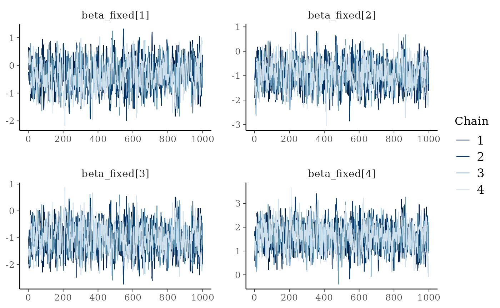

cmdstanr::install_cmdstan(cores = 4)
#> The C++ toolchain required for CmdStan is setup properly!
#> * Latest CmdStan release is v2.29.2
#> * Installing CmdStan v2.29.2 in /home/runner/.cmdstan/cmdstan-2.29.2
#> * Downloading cmdstan-2.29.2.tar.gz from GitHub...
#> * Download complete
#> * Unpacking archive...
#> * Building CmdStan binaries...
#> cp bin/linux-stanc bin/stanc
#> g++ -pipe -pthread -D_REENTRANT -O3 -I stan/lib/stan_math/lib/sundials_6.0.0/include -I stan/lib/stan_math/lib/sundials_6.0.0/src/sundials -DNO_FPRINTF_OUTPUT -O3 -c -x c -include stan/lib/stan_math/lib/sundials_6.0.0/include/stan_sundials_printf_override.hpp stan/lib/stan_math/lib/sundials_6.0.0/src/nvector/serial/nvector_serial.c -o stan/lib/stan_math/lib/sundials_6.0.0/src/nvector/serial/nvector_serial.o
#> g++ -pipe -pthread -D_REENTRANT -O3 -I stan/lib/stan_math/lib/sundials_6.0.0/include -I stan/lib/stan_math/lib/sundials_6.0.0/src/sundials -DNO_FPRINTF_OUTPUT -O3 -c -x c -include stan/lib/stan_math/lib/sundials_6.0.0/include/stan_sundials_printf_override.hpp stan/lib/stan_math/lib/sundials_6.0.0/src/sundials/sundials_math.c -o stan/lib/stan_math/lib/sundials_6.0.0/src/sundials/sundials_math.o
#> chmod +x bin/stanc
#> g++ -pipe -pthread -D_REENTRANT -O3 -I stan/lib/stan_math/lib/sundials_6.0.0/include -I stan/lib/stan_math/lib/sundials_6.0.0/src/sundials -DNO_FPRINTF_OUTPUT -O3 -c -x c -include stan/lib/stan_math/lib/sundials_6.0.0/include/stan_sundials_printf_override.hpp stan/lib/stan_math/lib/sundials_6.0.0/src/cvodes/cvodes_spils.c -o stan/lib/stan_math/lib/sundials_6.0.0/src/cvodes/cvodes_spils.o
#> g++ -pipe -pthread -D_REENTRANT -O3 -I stan/lib/stan_math/lib/sundials_6.0.0/include -I stan/lib/stan_math/lib/sundials_6.0.0/src/sundials -DNO_FPRINTF_OUTPUT -O3 -c -x c -include stan/lib/stan_math/lib/sundials_6.0.0/include/stan_sundials_printf_override.hpp stan/lib/stan_math/lib/sundials_6.0.0/src/cvodes/cvodes_diag.c -o stan/lib/stan_math/lib/sundials_6.0.0/src/cvodes/cvodes_diag.o
#> g++ -pipe -pthread -D_REENTRANT -O3 -I stan/lib/stan_math/lib/sundials_6.0.0/include -I stan/lib/stan_math/lib/sundials_6.0.0/src/sundials -DNO_FPRINTF_OUTPUT -O3 -c -x c -include stan/lib/stan_math/lib/sundials_6.0.0/include/stan_sundials_printf_override.hpp stan/lib/stan_math/lib/sundials_6.0.0/src/cvodes/cvodes_nls.c -o stan/lib/stan_math/lib/sundials_6.0.0/src/cvodes/cvodes_nls.o
#> g++ -pipe -pthread -D_REENTRANT -O3 -I stan/lib/stan_math/lib/sundials_6.0.0/include -I stan/lib/stan_math/lib/sundials_6.0.0/src/sundials -DNO_FPRINTF_OUTPUT -O3 -c -x c -include stan/lib/stan_math/lib/sundials_6.0.0/include/stan_sundials_printf_override.hpp stan/lib/stan_math/lib/sundials_6.0.0/src/cvodes/cvodea.c -o stan/lib/stan_math/lib/sundials_6.0.0/src/cvodes/cvodea.o
#> g++ -pipe -pthread -D_REENTRANT -O3 -I stan/lib/stan_math/lib/sundials_6.0.0/include -I stan/lib/stan_math/lib/sundials_6.0.0/src/sundials -DNO_FPRINTF_OUTPUT -O3 -c -x c -include stan/lib/stan_math/lib/sundials_6.0.0/include/stan_sundials_printf_override.hpp stan/lib/stan_math/lib/sundials_6.0.0/src/cvodes/cvodes_direct.c -o stan/lib/stan_math/lib/sundials_6.0.0/src/cvodes/cvodes_direct.o
#> g++ -pipe -pthread -D_REENTRANT -O3 -I stan/lib/stan_math/lib/sundials_6.0.0/include -I stan/lib/stan_math/lib/sundials_6.0.0/src/sundials -DNO_FPRINTF_OUTPUT -O3 -c -x c -include stan/lib/stan_math/lib/sundials_6.0.0/include/stan_sundials_printf_override.hpp stan/lib/stan_math/lib/sundials_6.0.0/src/cvodes/cvodea_io.c -o stan/lib/stan_math/lib/sundials_6.0.0/src/cvodes/cvodea_io.o
#> g++ -pipe -pthread -D_REENTRANT -O3 -I stan/lib/stan_math/lib/sundials_6.0.0/include -I stan/lib/stan_math/lib/sundials_6.0.0/src/sundials -DNO_FPRINTF_OUTPUT -O3 -c -x c -include stan/lib/stan_math/lib/sundials_6.0.0/include/stan_sundials_printf_override.hpp stan/lib/stan_math/lib/sundials_6.0.0/src/cvodes/cvodes_nls_stg.c -o stan/lib/stan_math/lib/sundials_6.0.0/src/cvodes/cvodes_nls_stg.o
#> g++ -pipe -pthread -D_REENTRANT -O3 -I stan/lib/stan_math/lib/sundials_6.0.0/include -I stan/lib/stan_math/lib/sundials_6.0.0/src/sundials -DNO_FPRINTF_OUTPUT -O3 -c -x c -include stan/lib/stan_math/lib/sundials_6.0.0/include/stan_sundials_printf_override.hpp stan/lib/stan_math/lib/sundials_6.0.0/src/cvodes/cvodes_bbdpre.c -o stan/lib/stan_math/lib/sundials_6.0.0/src/cvodes/cvodes_bbdpre.o
#> g++ -pipe -pthread -D_REENTRANT -O3 -I stan/lib/stan_math/lib/sundials_6.0.0/include -I stan/lib/stan_math/lib/sundials_6.0.0/src/sundials -DNO_FPRINTF_OUTPUT -O3 -c -x c -include stan/lib/stan_math/lib/sundials_6.0.0/include/stan_sundials_printf_override.hpp stan/lib/stan_math/lib/sundials_6.0.0/src/cvodes/cvodes_bandpre.c -o stan/lib/stan_math/lib/sundials_6.0.0/src/cvodes/cvodes_bandpre.o
#> g++ -pipe -pthread -D_REENTRANT -O3 -I stan/lib/stan_math/lib/sundials_6.0.0/include -I stan/lib/stan_math/lib/sundials_6.0.0/src/sundials -DNO_FPRINTF_OUTPUT -O3 -c -x c -include stan/lib/stan_math/lib/sundials_6.0.0/include/stan_sundials_printf_override.hpp stan/lib/stan_math/lib/sundials_6.0.0/src/cvodes/cvodes_io.c -o stan/lib/stan_math/lib/sundials_6.0.0/src/cvodes/cvodes_io.o
#> g++ -pipe -pthread -D_REENTRANT -O3 -I stan/lib/stan_math/lib/sundials_6.0.0/include -I stan/lib/stan_math/lib/sundials_6.0.0/src/sundials -DNO_FPRINTF_OUTPUT -O3 -c -x c -include stan/lib/stan_math/lib/sundials_6.0.0/include/stan_sundials_printf_override.hpp stan/lib/stan_math/lib/sundials_6.0.0/src/cvodes/cvodes.c -o stan/lib/stan_math/lib/sundials_6.0.0/src/cvodes/cvodes.o
#> g++ -pipe -pthread -D_REENTRANT -O3 -I stan/lib/stan_math/lib/sundials_6.0.0/include -I stan/lib/stan_math/lib/sundials_6.0.0/src/sundials -DNO_FPRINTF_OUTPUT -O3 -c -x c -include stan/lib/stan_math/lib/sundials_6.0.0/include/stan_sundials_printf_override.hpp stan/lib/stan_math/lib/sundials_6.0.0/src/cvodes/cvodes_ls.c -o stan/lib/stan_math/lib/sundials_6.0.0/src/cvodes/cvodes_ls.o
#> g++ -pipe -pthread -D_REENTRANT -O3 -I stan/lib/stan_math/lib/sundials_6.0.0/include -I stan/lib/stan_math/lib/sundials_6.0.0/src/sundials -DNO_FPRINTF_OUTPUT -O3 -c -x c -include stan/lib/stan_math/lib/sundials_6.0.0/include/stan_sundials_printf_override.hpp stan/lib/stan_math/lib/sundials_6.0.0/src/cvodes/cvodes_nls_sim.c -o stan/lib/stan_math/lib/sundials_6.0.0/src/cvodes/cvodes_nls_sim.o
#> g++ -pipe -pthread -D_REENTRANT -O3 -I stan/lib/stan_math/lib/sundials_6.0.0/include -I stan/lib/stan_math/lib/sundials_6.0.0/src/sundials -DNO_FPRINTF_OUTPUT -O3 -c -x c -include stan/lib/stan_math/lib/sundials_6.0.0/include/stan_sundials_printf_override.hpp stan/lib/stan_math/lib/sundials_6.0.0/src/cvodes/cvodes_nls_stg1.c -o stan/lib/stan_math/lib/sundials_6.0.0/src/cvodes/cvodes_nls_stg1.o
#> g++ -pipe -pthread -D_REENTRANT -O3 -I stan/lib/stan_math/lib/sundials_6.0.0/include -I stan/lib/stan_math/lib/sundials_6.0.0/src/sundials -DNO_FPRINTF_OUTPUT -O3 -c -x c -include stan/lib/stan_math/lib/sundials_6.0.0/include/stan_sundials_printf_override.hpp stan/lib/stan_math/lib/sundials_6.0.0/src/sundials/sundials_matrix.c -o stan/lib/stan_math/lib/sundials_6.0.0/src/sundials/sundials_matrix.o
#> g++ -pipe -pthread -D_REENTRANT -O3 -I stan/lib/stan_math/lib/sundials_6.0.0/include -I stan/lib/stan_math/lib/sundials_6.0.0/src/sundials -DNO_FPRINTF_OUTPUT -O3 -c -x c -include stan/lib/stan_math/lib/sundials_6.0.0/include/stan_sundials_printf_override.hpp stan/lib/stan_math/lib/sundials_6.0.0/src/sundials/sundials_linearsolver.c -o stan/lib/stan_math/lib/sundials_6.0.0/src/sundials/sundials_linearsolver.o
#> g++ -pipe -pthread -D_REENTRANT -O3 -I stan/lib/stan_math/lib/sundials_6.0.0/include -I stan/lib/stan_math/lib/sundials_6.0.0/src/sundials -DNO_FPRINTF_OUTPUT -O3 -c -x c -include stan/lib/stan_math/lib/sundials_6.0.0/include/stan_sundials_printf_override.hpp stan/lib/stan_math/lib/sundials_6.0.0/src/sundials/sundials_futils.c -o stan/lib/stan_math/lib/sundials_6.0.0/src/sundials/sundials_futils.o
#> g++ -pipe -pthread -D_REENTRANT -O3 -I stan/lib/stan_math/lib/sundials_6.0.0/include -I stan/lib/stan_math/lib/sundials_6.0.0/src/sundials -DNO_FPRINTF_OUTPUT -O3 -c -x c -include stan/lib/stan_math/lib/sundials_6.0.0/include/stan_sundials_printf_override.hpp stan/lib/stan_math/lib/sundials_6.0.0/src/sundials/sundials_version.c -o stan/lib/stan_math/lib/sundials_6.0.0/src/sundials/sundials_version.o
#> g++ -pipe -pthread -D_REENTRANT -O3 -I stan/lib/stan_math/lib/sundials_6.0.0/include -I stan/lib/stan_math/lib/sundials_6.0.0/src/sundials -DNO_FPRINTF_OUTPUT -O3 -c -x c -include stan/lib/stan_math/lib/sundials_6.0.0/include/stan_sundials_printf_override.hpp stan/lib/stan_math/lib/sundials_6.0.0/src/sundials/sundials_band.c -o stan/lib/stan_math/lib/sundials_6.0.0/src/sundials/sundials_band.o
#> g++ -pipe -pthread -D_REENTRANT -O3 -I stan/lib/stan_math/lib/sundials_6.0.0/include -I stan/lib/stan_math/lib/sundials_6.0.0/src/sundials -DNO_FPRINTF_OUTPUT -O3 -c -x c -include stan/lib/stan_math/lib/sundials_6.0.0/include/stan_sundials_printf_override.hpp stan/lib/stan_math/lib/sundials_6.0.0/src/sundials/sundials_direct.c -o stan/lib/stan_math/lib/sundials_6.0.0/src/sundials/sundials_direct.o
#> g++ -pipe -pthread -D_REENTRANT -O3 -I stan/lib/stan_math/lib/sundials_6.0.0/include -I stan/lib/stan_math/lib/sundials_6.0.0/src/sundials -DNO_FPRINTF_OUTPUT -O3 -c -x c -include stan/lib/stan_math/lib/sundials_6.0.0/include/stan_sundials_printf_override.hpp stan/lib/stan_math/lib/sundials_6.0.0/src/sundials/sundials_nonlinearsolver.c -o stan/lib/stan_math/lib/sundials_6.0.0/src/sundials/sundials_nonlinearsolver.o
#> g++ -pipe -pthread -D_REENTRANT -O3 -I stan/lib/stan_math/lib/sundials_6.0.0/include -I stan/lib/stan_math/lib/sundials_6.0.0/src/sundials -DNO_FPRINTF_OUTPUT -O3 -c -x c -include stan/lib/stan_math/lib/sundials_6.0.0/include/stan_sundials_printf_override.hpp stan/lib/stan_math/lib/sundials_6.0.0/src/sundials/sundials_memory.c -o stan/lib/stan_math/lib/sundials_6.0.0/src/sundials/sundials_memory.o
#> g++ -pipe -pthread -D_REENTRANT -O3 -I stan/lib/stan_math/lib/sundials_6.0.0/include -I stan/lib/stan_math/lib/sundials_6.0.0/src/sundials -DNO_FPRINTF_OUTPUT -O3 -c -x c -include stan/lib/stan_math/lib/sundials_6.0.0/include/stan_sundials_printf_override.hpp stan/lib/stan_math/lib/sundials_6.0.0/src/sundials/sundials_context.c -o stan/lib/stan_math/lib/sundials_6.0.0/src/sundials/sundials_context.o
#> g++ -pipe -pthread -D_REENTRANT -O3 -I stan/lib/stan_math/lib/sundials_6.0.0/include -I stan/lib/stan_math/lib/sundials_6.0.0/src/sundials -DNO_FPRINTF_OUTPUT -O3 -c -x c -include stan/lib/stan_math/lib/sundials_6.0.0/include/stan_sundials_printf_override.hpp stan/lib/stan_math/lib/sundials_6.0.0/src/sundials/sundials_nvector.c -o stan/lib/stan_math/lib/sundials_6.0.0/src/sundials/sundials_nvector.o
#> g++ -pipe -pthread -D_REENTRANT -O3 -I stan/lib/stan_math/lib/sundials_6.0.0/include -I stan/lib/stan_math/lib/sundials_6.0.0/src/sundials -DNO_FPRINTF_OUTPUT -O3 -c -x c -include stan/lib/stan_math/lib/sundials_6.0.0/include/stan_sundials_printf_override.hpp stan/lib/stan_math/lib/sundials_6.0.0/src/sundials/sundials_iterative.c -o stan/lib/stan_math/lib/sundials_6.0.0/src/sundials/sundials_iterative.o
#> g++ -pipe -pthread -D_REENTRANT -O3 -I stan/lib/stan_math/lib/sundials_6.0.0/include -I stan/lib/stan_math/lib/sundials_6.0.0/src/sundials -DNO_FPRINTF_OUTPUT -O3 -c -x c -include stan/lib/stan_math/lib/sundials_6.0.0/include/stan_sundials_printf_override.hpp stan/lib/stan_math/lib/sundials_6.0.0/src/sundials/sundials_nvector_senswrapper.c -o stan/lib/stan_math/lib/sundials_6.0.0/src/sundials/sundials_nvector_senswrapper.o
#> g++ -pipe -pthread -D_REENTRANT -O3 -I stan/lib/stan_math/lib/sundials_6.0.0/include -I stan/lib/stan_math/lib/sundials_6.0.0/src/sundials -DNO_FPRINTF_OUTPUT -O3 -c -x c -include stan/lib/stan_math/lib/sundials_6.0.0/include/stan_sundials_printf_override.hpp stan/lib/stan_math/lib/sundials_6.0.0/src/sundials/sundials_dense.c -o stan/lib/stan_math/lib/sundials_6.0.0/src/sundials/sundials_dense.o
#> g++ -pipe -pthread -D_REENTRANT -O3 -I stan/lib/stan_math/lib/sundials_6.0.0/include -I stan/lib/stan_math/lib/sundials_6.0.0/src/sundials -DNO_FPRINTF_OUTPUT -O3 -c -x c -include stan/lib/stan_math/lib/sundials_6.0.0/include/stan_sundials_printf_override.hpp stan/lib/stan_math/lib/sundials_6.0.0/src/sunmatrix/band/sunmatrix_band.c -o stan/lib/stan_math/lib/sundials_6.0.0/src/sunmatrix/band/sunmatrix_band.o
#> g++ -pipe -pthread -D_REENTRANT -O3 -I stan/lib/stan_math/lib/sundials_6.0.0/include -I stan/lib/stan_math/lib/sundials_6.0.0/src/sundials -DNO_FPRINTF_OUTPUT -O3 -c -x c -include stan/lib/stan_math/lib/sundials_6.0.0/include/stan_sundials_printf_override.hpp stan/lib/stan_math/lib/sundials_6.0.0/src/sunmatrix/dense/sunmatrix_dense.c -o stan/lib/stan_math/lib/sundials_6.0.0/src/sunmatrix/dense/sunmatrix_dense.o
#> g++ -pipe -pthread -D_REENTRANT -O3 -I stan/lib/stan_math/lib/sundials_6.0.0/include -I stan/lib/stan_math/lib/sundials_6.0.0/src/sundials -DNO_FPRINTF_OUTPUT -O3 -c -x c -include stan/lib/stan_math/lib/sundials_6.0.0/include/stan_sundials_printf_override.hpp stan/lib/stan_math/lib/sundials_6.0.0/src/sunlinsol/band/sunlinsol_band.c -o stan/lib/stan_math/lib/sundials_6.0.0/src/sunlinsol/band/sunlinsol_band.o
#> g++ -pipe -pthread -D_REENTRANT -O3 -I stan/lib/stan_math/lib/sundials_6.0.0/include -I stan/lib/stan_math/lib/sundials_6.0.0/src/sundials -DNO_FPRINTF_OUTPUT -O3 -c -x c -include stan/lib/stan_math/lib/sundials_6.0.0/include/stan_sundials_printf_override.hpp stan/lib/stan_math/lib/sundials_6.0.0/src/sunlinsol/dense/sunlinsol_dense.c -o stan/lib/stan_math/lib/sundials_6.0.0/src/sunlinsol/dense/sunlinsol_dense.o
#> g++ -pipe -pthread -D_REENTRANT -O3 -I stan/lib/stan_math/lib/sundials_6.0.0/include -I stan/lib/stan_math/lib/sundials_6.0.0/src/sundials -DNO_FPRINTF_OUTPUT -O3 -c -x c -include stan/lib/stan_math/lib/sundials_6.0.0/include/stan_sundials_printf_override.hpp stan/lib/stan_math/lib/sundials_6.0.0/src/sunnonlinsol/newton/sunnonlinsol_newton.c -o stan/lib/stan_math/lib/sundials_6.0.0/src/sunnonlinsol/newton/sunnonlinsol_newton.o
#> g++ -pipe -pthread -D_REENTRANT -O3 -I stan/lib/stan_math/lib/sundials_6.0.0/include -I stan/lib/stan_math/lib/sundials_6.0.0/src/sundials -DNO_FPRINTF_OUTPUT -O3 -c -x c -include stan/lib/stan_math/lib/sundials_6.0.0/include/stan_sundials_printf_override.hpp stan/lib/stan_math/lib/sundials_6.0.0/src/sunnonlinsol/fixedpoint/sunnonlinsol_fixedpoint.c -o stan/lib/stan_math/lib/sundials_6.0.0/src/sunnonlinsol/fixedpoint/sunnonlinsol_fixedpoint.o
#> g++ -pipe -pthread -D_REENTRANT -O3 -I stan/lib/stan_math/lib/sundials_6.0.0/include -I stan/lib/stan_math/lib/sundials_6.0.0/src/sundials -DNO_FPRINTF_OUTPUT -O3 -c -x c -include stan/lib/stan_math/lib/sundials_6.0.0/include/stan_sundials_printf_override.hpp stan/lib/stan_math/lib/sundials_6.0.0/src/idas/idas_spils.c -o stan/lib/stan_math/lib/sundials_6.0.0/src/idas/idas_spils.o
#> g++ -pipe -pthread -D_REENTRANT -O3 -I stan/lib/stan_math/lib/sundials_6.0.0/include -I stan/lib/stan_math/lib/sundials_6.0.0/src/sundials -DNO_FPRINTF_OUTPUT -O3 -c -x c -include stan/lib/stan_math/lib/sundials_6.0.0/include/stan_sundials_printf_override.hpp stan/lib/stan_math/lib/sundials_6.0.0/src/idas/idas_ic.c -o stan/lib/stan_math/lib/sundials_6.0.0/src/idas/idas_ic.o
#> g++ -pipe -pthread -D_REENTRANT -O3 -I stan/lib/stan_math/lib/sundials_6.0.0/include -I stan/lib/stan_math/lib/sundials_6.0.0/src/sundials -DNO_FPRINTF_OUTPUT -O3 -c -x c -include stan/lib/stan_math/lib/sundials_6.0.0/include/stan_sundials_printf_override.hpp stan/lib/stan_math/lib/sundials_6.0.0/src/idas/idaa.c -o stan/lib/stan_math/lib/sundials_6.0.0/src/idas/idaa.o
#> g++ -pipe -pthread -D_REENTRANT -O3 -I stan/lib/stan_math/lib/sundials_6.0.0/include -I stan/lib/stan_math/lib/sundials_6.0.0/src/sundials -DNO_FPRINTF_OUTPUT -O3 -c -x c -include stan/lib/stan_math/lib/sundials_6.0.0/include/stan_sundials_printf_override.hpp stan/lib/stan_math/lib/sundials_6.0.0/src/idas/idas_direct.c -o stan/lib/stan_math/lib/sundials_6.0.0/src/idas/idas_direct.o
#> g++ -pipe -pthread -D_REENTRANT -O3 -I stan/lib/stan_math/lib/sundials_6.0.0/include -I stan/lib/stan_math/lib/sundials_6.0.0/src/sundials -DNO_FPRINTF_OUTPUT -O3 -c -x c -include stan/lib/stan_math/lib/sundials_6.0.0/include/stan_sundials_printf_override.hpp stan/lib/stan_math/lib/sundials_6.0.0/src/idas/idaa_io.c -o stan/lib/stan_math/lib/sundials_6.0.0/src/idas/idaa_io.o
#> g++ -pipe -pthread -D_REENTRANT -O3 -I stan/lib/stan_math/lib/sundials_6.0.0/include -I stan/lib/stan_math/lib/sundials_6.0.0/src/sundials -DNO_FPRINTF_OUTPUT -O3 -c -x c -include stan/lib/stan_math/lib/sundials_6.0.0/include/stan_sundials_printf_override.hpp stan/lib/stan_math/lib/sundials_6.0.0/src/idas/idas_nls_stg.c -o stan/lib/stan_math/lib/sundials_6.0.0/src/idas/idas_nls_stg.o
#> g++ -pipe -pthread -D_REENTRANT -O3 -I stan/lib/stan_math/lib/sundials_6.0.0/include -I stan/lib/stan_math/lib/sundials_6.0.0/src/sundials -DNO_FPRINTF_OUTPUT -O3 -c -x c -include stan/lib/stan_math/lib/sundials_6.0.0/include/stan_sundials_printf_override.hpp stan/lib/stan_math/lib/sundials_6.0.0/src/idas/idas_bbdpre.c -o stan/lib/stan_math/lib/sundials_6.0.0/src/idas/idas_bbdpre.o
#> g++ -pipe -pthread -D_REENTRANT -O3 -I stan/lib/stan_math/lib/sundials_6.0.0/include -I stan/lib/stan_math/lib/sundials_6.0.0/src/sundials -DNO_FPRINTF_OUTPUT -O3 -c -x c -include stan/lib/stan_math/lib/sundials_6.0.0/include/stan_sundials_printf_override.hpp stan/lib/stan_math/lib/sundials_6.0.0/src/idas/idas_io.c -o stan/lib/stan_math/lib/sundials_6.0.0/src/idas/idas_io.o
#> g++ -pipe -pthread -D_REENTRANT -O3 -I stan/lib/stan_math/lib/sundials_6.0.0/include -I stan/lib/stan_math/lib/sundials_6.0.0/src/sundials -DNO_FPRINTF_OUTPUT -O3 -c -x c -include stan/lib/stan_math/lib/sundials_6.0.0/include/stan_sundials_printf_override.hpp stan/lib/stan_math/lib/sundials_6.0.0/src/idas/idas.c -o stan/lib/stan_math/lib/sundials_6.0.0/src/idas/idas.o
#> g++ -pipe -pthread -D_REENTRANT -O3 -I stan/lib/stan_math/lib/sundials_6.0.0/include -I stan/lib/stan_math/lib/sundials_6.0.0/src/sundials -DNO_FPRINTF_OUTPUT -O3 -c -x c -include stan/lib/stan_math/lib/sundials_6.0.0/include/stan_sundials_printf_override.hpp stan/lib/stan_math/lib/sundials_6.0.0/src/idas/idas_ls.c -o stan/lib/stan_math/lib/sundials_6.0.0/src/idas/idas_ls.o
#> g++ -pipe -pthread -D_REENTRANT -O3 -I stan/lib/stan_math/lib/sundials_6.0.0/include -I stan/lib/stan_math/lib/sundials_6.0.0/src/sundials -DNO_FPRINTF_OUTPUT -O3 -c -x c -include stan/lib/stan_math/lib/sundials_6.0.0/include/stan_sundials_printf_override.hpp stan/lib/stan_math/lib/sundials_6.0.0/src/idas/idas_nls.c -o stan/lib/stan_math/lib/sundials_6.0.0/src/idas/idas_nls.o
#> g++ -pipe -pthread -D_REENTRANT -O3 -I stan/lib/stan_math/lib/sundials_6.0.0/include -I stan/lib/stan_math/lib/sundials_6.0.0/src/sundials -DNO_FPRINTF_OUTPUT -O3 -c -x c -include stan/lib/stan_math/lib/sundials_6.0.0/include/stan_sundials_printf_override.hpp stan/lib/stan_math/lib/sundials_6.0.0/src/idas/idas_nls_sim.c -o stan/lib/stan_math/lib/sundials_6.0.0/src/idas/idas_nls_sim.o
#> g++ -pipe -pthread -D_REENTRANT -O3 -I stan/lib/stan_math/lib/sundials_6.0.0/include -I stan/lib/stan_math/lib/sundials_6.0.0/src/sundials -DNO_FPRINTF_OUTPUT -O3 -c -x c -include stan/lib/stan_math/lib/sundials_6.0.0/include/stan_sundials_printf_override.hpp stan/lib/stan_math/lib/sundials_6.0.0/src/kinsol/kinsol_direct.c -o stan/lib/stan_math/lib/sundials_6.0.0/src/kinsol/kinsol_direct.o
#> g++ -pipe -pthread -D_REENTRANT -O3 -I stan/lib/stan_math/lib/sundials_6.0.0/include -I stan/lib/stan_math/lib/sundials_6.0.0/src/sundials -DNO_FPRINTF_OUTPUT -O3 -c -x c -include stan/lib/stan_math/lib/sundials_6.0.0/include/stan_sundials_printf_override.hpp stan/lib/stan_math/lib/sundials_6.0.0/src/kinsol/kinsol_bbdpre.c -o stan/lib/stan_math/lib/sundials_6.0.0/src/kinsol/kinsol_bbdpre.o
#> g++ -pipe -pthread -D_REENTRANT -O3 -I stan/lib/stan_math/lib/sundials_6.0.0/include -I stan/lib/stan_math/lib/sundials_6.0.0/src/sundials -DNO_FPRINTF_OUTPUT -O3 -c -x c -include stan/lib/stan_math/lib/sundials_6.0.0/include/stan_sundials_printf_override.hpp stan/lib/stan_math/lib/sundials_6.0.0/src/kinsol/kinsol_io.c -o stan/lib/stan_math/lib/sundials_6.0.0/src/kinsol/kinsol_io.o
#> g++ -pipe -pthread -D_REENTRANT -O3 -I stan/lib/stan_math/lib/sundials_6.0.0/include -I stan/lib/stan_math/lib/sundials_6.0.0/src/sundials -DNO_FPRINTF_OUTPUT -O3 -c -x c -include stan/lib/stan_math/lib/sundials_6.0.0/include/stan_sundials_printf_override.hpp stan/lib/stan_math/lib/sundials_6.0.0/src/kinsol/kinsol_ls.c -o stan/lib/stan_math/lib/sundials_6.0.0/src/kinsol/kinsol_ls.o
#> g++ -pipe -pthread -D_REENTRANT -O3 -I stan/lib/stan_math/lib/sundials_6.0.0/include -I stan/lib/stan_math/lib/sundials_6.0.0/src/sundials -DNO_FPRINTF_OUTPUT -O3 -c -x c -include stan/lib/stan_math/lib/sundials_6.0.0/include/stan_sundials_printf_override.hpp stan/lib/stan_math/lib/sundials_6.0.0/src/kinsol/kinsol_spils.c -o stan/lib/stan_math/lib/sundials_6.0.0/src/kinsol/kinsol_spils.o
#> g++ -pipe -pthread -D_REENTRANT -O3 -I stan/lib/stan_math/lib/sundials_6.0.0/include -I stan/lib/stan_math/lib/sundials_6.0.0/src/sundials -DNO_FPRINTF_OUTPUT -O3 -c -x c -include stan/lib/stan_math/lib/sundials_6.0.0/include/stan_sundials_printf_override.hpp stan/lib/stan_math/lib/sundials_6.0.0/src/kinsol/kinsol.c -o stan/lib/stan_math/lib/sundials_6.0.0/src/kinsol/kinsol.o
#> touch stan/lib/stan_math/lib/tbb/tbb-make-check
#>
#> --- Compiling the main object file. This might take up to a minute. ---
#> g++ -std=c++1y -pthread -D_REENTRANT -Wno-sign-compare -Wno-ignored-attributes -I stan/lib/stan_math/lib/tbb_2020.3/include -O3 -I src -I stan/src -I lib/rapidjson_1.1.0/ -I lib/CLI11-1.9.1/ -I stan/lib/stan_math/ -I stan/lib/stan_math/lib/eigen_3.3.9 -I stan/lib/stan_math/lib/boost_1.75.0 -I stan/lib/stan_math/lib/sundials_6.0.0/include -I stan/lib/stan_math/lib/sundials_6.0.0/src/sundials -DBOOST_DISABLE_ASSERTS -c -o src/cmdstan/main.o src/cmdstan/main.cpp
#>
#> --- Compiling pre-compiled header. This might take a few seconds. ---
#> g++ -std=c++1y -pthread -D_REENTRANT -Wno-sign-compare -Wno-ignored-attributes -I stan/lib/stan_math/lib/tbb_2020.3/include -O3 -I src -I stan/src -I lib/rapidjson_1.1.0/ -I lib/CLI11-1.9.1/ -I stan/lib/stan_math/ -I stan/lib/stan_math/lib/eigen_3.3.9 -I stan/lib/stan_math/lib/boost_1.75.0 -I stan/lib/stan_math/lib/sundials_6.0.0/include -I stan/lib/stan_math/lib/sundials_6.0.0/src/sundials -DBOOST_DISABLE_ASSERTS -c stan/src/stan/model/model_header.hpp -o stan/src/stan/model/model_header.hpp.gch
#> g++ -std=c++1y -pthread -D_REENTRANT -Wno-sign-compare -Wno-ignored-attributes -I stan/lib/stan_math/lib/tbb_2020.3/include -O3 -I src -I stan/src -I lib/rapidjson_1.1.0/ -I lib/CLI11-1.9.1/ -I stan/lib/stan_math/ -I stan/lib/stan_math/lib/eigen_3.3.9 -I stan/lib/stan_math/lib/boost_1.75.0 -I stan/lib/stan_math/lib/sundials_6.0.0/include -I stan/lib/stan_math/lib/sundials_6.0.0/src/sundials -DBOOST_DISABLE_ASSERTS -c -fvisibility=hidden -o bin/cmdstan/stansummary.o -Wl,-L,"/home/runner/.cmdstan/cmdstan-2.29.2/stan/lib/stan_math/lib/tbb" -Wl,-rpath,"/home/runner/.cmdstan/cmdstan-2.29.2/stan/lib/stan_math/lib/tbb" src/cmdstan/stansummary.cpp
#> g++ -std=c++1y -pthread -D_REENTRANT -Wno-sign-compare -Wno-ignored-attributes -I stan/lib/stan_math/lib/tbb_2020.3/include -O3 -I src -I stan/src -I lib/rapidjson_1.1.0/ -I lib/CLI11-1.9.1/ -I stan/lib/stan_math/ -I stan/lib/stan_math/lib/eigen_3.3.9 -I stan/lib/stan_math/lib/boost_1.75.0 -I stan/lib/stan_math/lib/sundials_6.0.0/include -I stan/lib/stan_math/lib/sundials_6.0.0/src/sundials -DBOOST_DISABLE_ASSERTS -c -fvisibility=hidden -o bin/cmdstan/print.o -Wl,-L,"/home/runner/.cmdstan/cmdstan-2.29.2/stan/lib/stan_math/lib/tbb" -Wl,-rpath,"/home/runner/.cmdstan/cmdstan-2.29.2/stan/lib/stan_math/lib/tbb" src/cmdstan/print.cpp
#> g++ -std=c++1y -pthread -D_REENTRANT -Wno-sign-compare -Wno-ignored-attributes -I stan/lib/stan_math/lib/tbb_2020.3/include -O3 -I src -I stan/src -I lib/rapidjson_1.1.0/ -I lib/CLI11-1.9.1/ -I stan/lib/stan_math/ -I stan/lib/stan_math/lib/eigen_3.3.9 -I stan/lib/stan_math/lib/boost_1.75.0 -I stan/lib/stan_math/lib/sundials_6.0.0/include -I stan/lib/stan_math/lib/sundials_6.0.0/src/sundials -DBOOST_DISABLE_ASSERTS -c -fvisibility=hidden -o bin/cmdstan/diagnose.o -Wl,-L,"/home/runner/.cmdstan/cmdstan-2.29.2/stan/lib/stan_math/lib/tbb" -Wl,-rpath,"/home/runner/.cmdstan/cmdstan-2.29.2/stan/lib/stan_math/lib/tbb" src/cmdstan/diagnose.cpp
#> ar -rs stan/lib/stan_math/lib/sundials_6.0.0/lib/libsundials_nvecserial.a stan/lib/stan_math/lib/sundials_6.0.0/src/nvector/serial/nvector_serial.o stan/lib/stan_math/lib/sundials_6.0.0/src/sundials/sundials_math.o
#> ar: creating stan/lib/stan_math/lib/sundials_6.0.0/lib/libsundials_nvecserial.a
#> ar -rs stan/lib/stan_math/lib/sundials_6.0.0/lib/libsundials_cvodes.a stan/lib/stan_math/lib/sundials_6.0.0/src/cvodes/cvodes_spils.o stan/lib/stan_math/lib/sundials_6.0.0/src/cvodes/cvodes_diag.o stan/lib/stan_math/lib/sundials_6.0.0/src/cvodes/cvodes_nls.o stan/lib/stan_math/lib/sundials_6.0.0/src/cvodes/cvodea.o stan/lib/stan_math/lib/sundials_6.0.0/src/cvodes/cvodes_direct.o stan/lib/stan_math/lib/sundials_6.0.0/src/cvodes/cvodea_io.o stan/lib/stan_math/lib/sundials_6.0.0/src/cvodes/cvodes_nls_stg.o stan/lib/stan_math/lib/sundials_6.0.0/src/cvodes/cvodes_bbdpre.o stan/lib/stan_math/lib/sundials_6.0.0/src/cvodes/cvodes_bandpre.o stan/lib/stan_math/lib/sundials_6.0.0/src/cvodes/cvodes_io.o stan/lib/stan_math/lib/sundials_6.0.0/src/cvodes/cvodes.o stan/lib/stan_math/lib/sundials_6.0.0/src/cvodes/cvodes_ls.o stan/lib/stan_math/lib/sundials_6.0.0/src/cvodes/cvodes_nls_sim.o stan/lib/stan_math/lib/sundials_6.0.0/src/cvodes/cvodes_nls_stg1.o stan/lib/stan_math/lib/sundials_6.0.0/src/sundials/sundials_matrix.o stan/lib/stan_math/lib/sundials_6.0.0/src/sundials/sundials_linearsolver.o stan/lib/stan_math/lib/sundials_6.0.0/src/sundials/sundials_futils.o stan/lib/stan_math/lib/sundials_6.0.0/src/sundials/sundials_version.o stan/lib/stan_math/lib/sundials_6.0.0/src/sundials/sundials_band.o stan/lib/stan_math/lib/sundials_6.0.0/src/sundials/sundials_direct.o stan/lib/stan_math/lib/sundials_6.0.0/src/sundials/sundials_nonlinearsolver.o stan/lib/stan_math/lib/sundials_6.0.0/src/sundials/sundials_math.o stan/lib/stan_math/lib/sundials_6.0.0/src/sundials/sundials_memory.o stan/lib/stan_math/lib/sundials_6.0.0/src/sundials/sundials_context.o stan/lib/stan_math/lib/sundials_6.0.0/src/sundials/sundials_nvector.o stan/lib/stan_math/lib/sundials_6.0.0/src/sundials/sundials_iterative.o stan/lib/stan_math/lib/sundials_6.0.0/src/sundials/sundials_nvector_senswrapper.o stan/lib/stan_math/lib/sundials_6.0.0/src/sundials/sundials_dense.o stan/lib/stan_math/lib/sundials_6.0.0/src/sunmatrix/band/sunmatrix_band.o stan/lib/stan_math/lib/sundials_6.0.0/src/sunmatrix/dense/sunmatrix_dense.o stan/lib/stan_math/lib/sundials_6.0.0/src/sunlinsol/band/sunlinsol_band.o stan/lib/stan_math/lib/sundials_6.0.0/src/sunlinsol/dense/sunlinsol_dense.o stan/lib/stan_math/lib/sundials_6.0.0/src/sunnonlinsol/newton/sunnonlinsol_newton.o stan/lib/stan_math/lib/sundials_6.0.0/src/sunnonlinsol/fixedpoint/sunnonlinsol_fixedpoint.o
#> ar: creating stan/lib/stan_math/lib/sundials_6.0.0/lib/libsundials_cvodes.a
#> ar -rs stan/lib/stan_math/lib/sundials_6.0.0/lib/libsundials_idas.a stan/lib/stan_math/lib/sundials_6.0.0/src/idas/idas_spils.o stan/lib/stan_math/lib/sundials_6.0.0/src/idas/idas_ic.o stan/lib/stan_math/lib/sundials_6.0.0/src/idas/idaa.o stan/lib/stan_math/lib/sundials_6.0.0/src/idas/idas_direct.o stan/lib/stan_math/lib/sundials_6.0.0/src/idas/idaa_io.o stan/lib/stan_math/lib/sundials_6.0.0/src/idas/idas_nls_stg.o stan/lib/stan_math/lib/sundials_6.0.0/src/idas/idas_bbdpre.o stan/lib/stan_math/lib/sundials_6.0.0/src/idas/idas_io.o stan/lib/stan_math/lib/sundials_6.0.0/src/idas/idas.o stan/lib/stan_math/lib/sundials_6.0.0/src/idas/idas_ls.o stan/lib/stan_math/lib/sundials_6.0.0/src/idas/idas_nls.o stan/lib/stan_math/lib/sundials_6.0.0/src/idas/idas_nls_sim.o stan/lib/stan_math/lib/sundials_6.0.0/src/sundials/sundials_matrix.o stan/lib/stan_math/lib/sundials_6.0.0/src/sundials/sundials_linearsolver.o stan/lib/stan_math/lib/sundials_6.0.0/src/sundials/sundials_futils.o stan/lib/stan_math/lib/sundials_6.0.0/src/sundials/sundials_version.o stan/lib/stan_math/lib/sundials_6.0.0/src/sundials/sundials_band.o stan/lib/stan_math/lib/sundials_6.0.0/src/sundials/sundials_direct.o stan/lib/stan_math/lib/sundials_6.0.0/src/sundials/sundials_nonlinearsolver.o stan/lib/stan_math/lib/sundials_6.0.0/src/sundials/sundials_math.o stan/lib/stan_math/lib/sundials_6.0.0/src/sundials/sundials_memory.o stan/lib/stan_math/lib/sundials_6.0.0/src/sundials/sundials_context.o stan/lib/stan_math/lib/sundials_6.0.0/src/sundials/sundials_nvector.o stan/lib/stan_math/lib/sundials_6.0.0/src/sundials/sundials_iterative.o stan/lib/stan_math/lib/sundials_6.0.0/src/sundials/sundials_nvector_senswrapper.o stan/lib/stan_math/lib/sundials_6.0.0/src/sundials/sundials_dense.o stan/lib/stan_math/lib/sundials_6.0.0/src/sunmatrix/band/sunmatrix_band.o stan/lib/stan_math/lib/sundials_6.0.0/src/sunmatrix/dense/sunmatrix_dense.o stan/lib/stan_math/lib/sundials_6.0.0/src/sunlinsol/band/sunlinsol_band.o stan/lib/stan_math/lib/sundials_6.0.0/src/sunlinsol/dense/sunlinsol_dense.o stan/lib/stan_math/lib/sundials_6.0.0/src/sunnonlinsol/newton/sunnonlinsol_newton.o stan/lib/stan_math/lib/sundials_6.0.0/src/sunnonlinsol/fixedpoint/sunnonlinsol_fixedpoint.o
#> ar: creating stan/lib/stan_math/lib/sundials_6.0.0/lib/libsundials_idas.a
#> ar -rs stan/lib/stan_math/lib/sundials_6.0.0/lib/libsundials_kinsol.a stan/lib/stan_math/lib/sundials_6.0.0/src/kinsol/kinsol_direct.o stan/lib/stan_math/lib/sundials_6.0.0/src/kinsol/kinsol_bbdpre.o stan/lib/stan_math/lib/sundials_6.0.0/src/kinsol/kinsol_io.o stan/lib/stan_math/lib/sundials_6.0.0/src/kinsol/kinsol_ls.o stan/lib/stan_math/lib/sundials_6.0.0/src/kinsol/kinsol_spils.o stan/lib/stan_math/lib/sundials_6.0.0/src/kinsol/kinsol.o stan/lib/stan_math/lib/sundials_6.0.0/src/sundials/sundials_matrix.o stan/lib/stan_math/lib/sundials_6.0.0/src/sundials/sundials_linearsolver.o stan/lib/stan_math/lib/sundials_6.0.0/src/sundials/sundials_futils.o stan/lib/stan_math/lib/sundials_6.0.0/src/sundials/sundials_version.o stan/lib/stan_math/lib/sundials_6.0.0/src/sundials/sundials_band.o stan/lib/stan_math/lib/sundials_6.0.0/src/sundials/sundials_direct.o stan/lib/stan_math/lib/sundials_6.0.0/src/sundials/sundials_nonlinearsolver.o stan/lib/stan_math/lib/sundials_6.0.0/src/sundials/sundials_math.o stan/lib/stan_math/lib/sundials_6.0.0/src/sundials/sundials_memory.o stan/lib/stan_math/lib/sundials_6.0.0/src/sundials/sundials_context.o stan/lib/stan_math/lib/sundials_6.0.0/src/sundials/sundials_nvector.o stan/lib/stan_math/lib/sundials_6.0.0/src/sundials/sundials_iterative.o stan/lib/stan_math/lib/sundials_6.0.0/src/sundials/sundials_nvector_senswrapper.o stan/lib/stan_math/lib/sundials_6.0.0/src/sundials/sundials_dense.o stan/lib/stan_math/lib/sundials_6.0.0/src/sunmatrix/band/sunmatrix_band.o stan/lib/stan_math/lib/sundials_6.0.0/src/sunmatrix/dense/sunmatrix_dense.o stan/lib/stan_math/lib/sundials_6.0.0/src/sunlinsol/band/sunlinsol_band.o stan/lib/stan_math/lib/sundials_6.0.0/src/sunlinsol/dense/sunlinsol_dense.o stan/lib/stan_math/lib/sundials_6.0.0/src/sunnonlinsol/newton/sunnonlinsol_newton.o stan/lib/stan_math/lib/sundials_6.0.0/src/sunnonlinsol/fixedpoint/sunnonlinsol_fixedpoint.o
#> ar: creating stan/lib/stan_math/lib/sundials_6.0.0/lib/libsundials_kinsol.a
#> tbb_root="../tbb_2020.3" CXX="g++" CC="gcc" LDFLAGS='-Wl,-L,"/home/runner/.cmdstan/cmdstan-2.29.2/stan/lib/stan_math/lib/tbb" -Wl,-rpath,"/home/runner/.cmdstan/cmdstan-2.29.2/stan/lib/stan_math/lib/tbb" ' 'make' -C "stan/lib/stan_math/lib/tbb" -r -f "/home/runner/.cmdstan/cmdstan-2.29.2/stan/lib/stan_math/lib/tbb_2020.3/build/Makefile.tbbmalloc" compiler=gcc cfg=release stdver=c++1y malloc CXXFLAGS="-Wno-unknown-warning-option -Wno-deprecated-copy -Wno-missing-attributes -Wno-class-memaccess -Wno-sized-deallocation "
#> make[1]: Entering directory '/home/runner/.cmdstan/cmdstan-2.29.2/stan/lib/stan_math/lib/tbb'
#> g++ -c -MMD -O2 -g -DDO_ITT_NOTIFY -DUSE_PTHREAD -pthread -m64 -mrtm -Wno-unknown-warning-option -Wno-deprecated-copy -Wno-missing-attributes -Wno-class-memaccess -Wno-sized-deallocation -DTBB_SUPPRESS_DEPRECATED_MESSAGES=1 -fno-rtti -fno-exceptions -D__TBBMALLOC_BUILD=1 -Wno-parentheses -Wno-sized-deallocation -fPIC -flifetime-dse=1 -I../tbb_2020.3/src -I../tbb_2020.3/src/rml/include -I../tbb_2020.3/include -I../tbb_2020.3/src/tbbmalloc -I../tbb_2020.3/src/tbbmalloc ../tbb_2020.3/src/tbbmalloc/backend.cpp
#> g++ -c -MMD -O2 -g -DDO_ITT_NOTIFY -DUSE_PTHREAD -pthread -m64 -mrtm -Wno-unknown-warning-option -Wno-deprecated-copy -Wno-missing-attributes -Wno-class-memaccess -Wno-sized-deallocation -DTBB_SUPPRESS_DEPRECATED_MESSAGES=1 -fno-rtti -fno-exceptions -D__TBBMALLOC_BUILD=1 -Wno-parentheses -Wno-sized-deallocation -fPIC -flifetime-dse=1 -I../tbb_2020.3/src -I../tbb_2020.3/src/rml/include -I../tbb_2020.3/include -I../tbb_2020.3/src/tbbmalloc -I../tbb_2020.3/src/tbbmalloc ../tbb_2020.3/src/tbbmalloc/large_objects.cpp
#> g++ -c -MMD -O2 -g -DDO_ITT_NOTIFY -DUSE_PTHREAD -pthread -m64 -mrtm -Wno-unknown-warning-option -Wno-deprecated-copy -Wno-missing-attributes -Wno-class-memaccess -Wno-sized-deallocation -DTBB_SUPPRESS_DEPRECATED_MESSAGES=1 -fno-rtti -fno-exceptions -D__TBBMALLOC_BUILD=1 -Wno-parentheses -Wno-sized-deallocation -fPIC -flifetime-dse=1 -I../tbb_2020.3/src -I../tbb_2020.3/src/rml/include -I../tbb_2020.3/include -I../tbb_2020.3/src/tbbmalloc -I../tbb_2020.3/src/tbbmalloc ../tbb_2020.3/src/tbbmalloc/backref.cpp
#> g++ -c -MMD -O2 -g -DDO_ITT_NOTIFY -DUSE_PTHREAD -pthread -m64 -mrtm -Wno-unknown-warning-option -Wno-deprecated-copy -Wno-missing-attributes -Wno-class-memaccess -Wno-sized-deallocation -DTBB_SUPPRESS_DEPRECATED_MESSAGES=1 -fno-rtti -fno-exceptions -D__TBBMALLOC_BUILD=1 -Wno-parentheses -Wno-sized-deallocation -fPIC -flifetime-dse=1 -I../tbb_2020.3/src -I../tbb_2020.3/src/rml/include -I../tbb_2020.3/include -I../tbb_2020.3/src/tbbmalloc -I../tbb_2020.3/src/tbbmalloc ../tbb_2020.3/src/tbbmalloc/tbbmalloc.cpp
#> g++ -std=c++1y -pthread -D_REENTRANT -Wno-sign-compare -Wno-ignored-attributes -I stan/lib/stan_math/lib/tbb_2020.3/include -O3 -I src -I stan/src -I lib/rapidjson_1.1.0/ -I lib/CLI11-1.9.1/ -I stan/lib/stan_math/ -I stan/lib/stan_math/lib/eigen_3.3.9 -I stan/lib/stan_math/lib/boost_1.75.0 -I stan/lib/stan_math/lib/sundials_6.0.0/include -I stan/lib/stan_math/lib/sundials_6.0.0/src/sundials -DBOOST_DISABLE_ASSERTS -Wl,-L,"/home/runner/.cmdstan/cmdstan-2.29.2/stan/lib/stan_math/lib/tbb" -Wl,-rpath,"/home/runner/.cmdstan/cmdstan-2.29.2/stan/lib/stan_math/lib/tbb" bin/cmdstan/print.o -Wl,-L,"/home/runner/.cmdstan/cmdstan-2.29.2/stan/lib/stan_math/lib/tbb" -Wl,-rpath,"/home/runner/.cmdstan/cmdstan-2.29.2/stan/lib/stan_math/lib/tbb" -o bin/print
#> g++ -c -MMD -O2 -g -DDO_ITT_NOTIFY -DUSE_PTHREAD -pthread -m64 -mrtm -Wno-unknown-warning-option -Wno-deprecated-copy -Wno-missing-attributes -Wno-class-memaccess -Wno-sized-deallocation -DTBB_SUPPRESS_DEPRECATED_MESSAGES=1 -fno-rtti -fno-exceptions -D__TBBMALLOC_BUILD=1 -Wno-parentheses -Wno-sized-deallocation -fPIC -flifetime-dse=1 -o itt_notify_malloc.o -I../tbb_2020.3/src -I../tbb_2020.3/src/rml/include -I../tbb_2020.3/include ../tbb_2020.3/src/tbb/itt_notify.cpp
#> sh ../tbb_2020.3/build/version_info_linux.sh g++ -O2 -g -DDO_ITT_NOTIFY -DUSE_PTHREAD -pthread -m64 -mrtm -Wall -Wextra -Wno-unknown-warning-option -Wno-deprecated-copy -Wno-missing-attributes -Wno-class-memaccess -Wno-sized-deallocation -DTBB_SUPPRESS_DEPRECATED_MESSAGES=1 -std=c++1y -I../tbb_2020.3/src -I../tbb_2020.3/src/rml/include -I../tbb_2020.3/include >version_string.ver
#> echo "INPUT (libtbbmalloc.so.2)" > libtbbmalloc.so
#> g++ -E -x c++ ../tbb_2020.3/src/tbbmalloc/lin64-tbbmalloc-export.def -O2 -g -DDO_ITT_NOTIFY -DUSE_PTHREAD -pthread -m64 -mrtm -Wall -Wextra -Wno-unknown-warning-option -Wno-deprecated-copy -Wno-missing-attributes -Wno-class-memaccess -Wno-sized-deallocation -DTBB_SUPPRESS_DEPRECATED_MESSAGES=1 -fno-rtti -fno-exceptions -D__TBBMALLOC_BUILD=1 -Wno-parentheses -Wno-sized-deallocation -I../tbb_2020.3/src -I../tbb_2020.3/src/rml/include -I../tbb_2020.3/include > tbbmalloc.def
#> g++ -c -MMD -O2 -g -DDO_ITT_NOTIFY -DUSE_PTHREAD -pthread -m64 -mrtm -Wall -Wextra -Wno-unknown-warning-option -Wno-deprecated-copy -Wno-missing-attributes -Wno-class-memaccess -Wno-sized-deallocation -DTBB_SUPPRESS_DEPRECATED_MESSAGES=1 -Wno-parentheses -Wno-sized-deallocation -fPIC -flifetime-dse=1 -D__TBBMALLOC_BUILD=1 -I../tbb_2020.3/src -I../tbb_2020.3/src/rml/include -I../tbb_2020.3/include -I../tbb_2020.3/src/tbbmalloc -I../tbb_2020.3/src/tbbmalloc ../tbb_2020.3/src/tbbmalloc/proxy.cpp
#> g++ -c -MMD -O2 -g -DDO_ITT_NOTIFY -DUSE_PTHREAD -pthread -m64 -mrtm -Wall -Wextra -Wno-unknown-warning-option -Wno-deprecated-copy -Wno-missing-attributes -Wno-class-memaccess -Wno-sized-deallocation -DTBB_SUPPRESS_DEPRECATED_MESSAGES=1 -Wno-parentheses -Wno-sized-deallocation -fPIC -flifetime-dse=1 -D__TBBMALLOC_BUILD=1 -I../tbb_2020.3/src -I../tbb_2020.3/src/rml/include -I../tbb_2020.3/include -I../tbb_2020.3/src/tbbmalloc -I../tbb_2020.3/src/tbbmalloc ../tbb_2020.3/src/tbbmalloc/tbb_function_replacement.cpp
#> echo "INPUT (libtbbmalloc_proxy.so.2)" > libtbbmalloc_proxy.so
#> g++ -E -x c++ ../tbb_2020.3/src/tbbmalloc/lin64-proxy-export.def -O2 -g -DDO_ITT_NOTIFY -DUSE_PTHREAD -pthread -m64 -mrtm -Wall -Wextra -Wno-unknown-warning-option -Wno-deprecated-copy -Wno-missing-attributes -Wno-class-memaccess -Wno-sized-deallocation -DTBB_SUPPRESS_DEPRECATED_MESSAGES=1 -Wno-parentheses -Wno-sized-deallocation -I../tbb_2020.3/src -I../tbb_2020.3/src/rml/include -I../tbb_2020.3/include > tbbmallocproxy.def
#> g++ -c -MMD -O2 -g -DDO_ITT_NOTIFY -DUSE_PTHREAD -pthread -m64 -mrtm -Wno-unknown-warning-option -Wno-deprecated-copy -Wno-missing-attributes -Wno-class-memaccess -Wno-sized-deallocation -DTBB_SUPPRESS_DEPRECATED_MESSAGES=1 -fno-rtti -fno-exceptions -D__TBBMALLOC_BUILD=1 -Wno-parentheses -Wno-sized-deallocation -fPIC -flifetime-dse=1 -I../tbb_2020.3/src -I../tbb_2020.3/src/rml/include -I../tbb_2020.3/include -I../tbb_2020.3/src/tbbmalloc -I../tbb_2020.3/src/tbbmalloc -I. ../tbb_2020.3/src/tbbmalloc/frontend.cpp
#> g++ -std=c++1y -pthread -D_REENTRANT -Wno-sign-compare -Wno-ignored-attributes -I stan/lib/stan_math/lib/tbb_2020.3/include -O3 -I src -I stan/src -I lib/rapidjson_1.1.0/ -I lib/CLI11-1.9.1/ -I stan/lib/stan_math/ -I stan/lib/stan_math/lib/eigen_3.3.9 -I stan/lib/stan_math/lib/boost_1.75.0 -I stan/lib/stan_math/lib/sundials_6.0.0/include -I stan/lib/stan_math/lib/sundials_6.0.0/src/sundials -DBOOST_DISABLE_ASSERTS -Wl,-L,"/home/runner/.cmdstan/cmdstan-2.29.2/stan/lib/stan_math/lib/tbb" -Wl,-rpath,"/home/runner/.cmdstan/cmdstan-2.29.2/stan/lib/stan_math/lib/tbb" bin/cmdstan/stansummary.o -Wl,-L,"/home/runner/.cmdstan/cmdstan-2.29.2/stan/lib/stan_math/lib/tbb" -Wl,-rpath,"/home/runner/.cmdstan/cmdstan-2.29.2/stan/lib/stan_math/lib/tbb" -o bin/stansummary
#> gcc -fPIC -o libtbbmalloc.so.2 backend.o large_objects.o backref.o tbbmalloc.o itt_notify_malloc.o frontend.o -ldl -lrt -shared -Wl,-soname=libtbbmalloc.so.2 -pthread -m64 -Wl,-L,"/home/runner/.cmdstan/cmdstan-2.29.2/stan/lib/stan_math/lib/tbb" -Wl,-rpath,"/home/runner/.cmdstan/cmdstan-2.29.2/stan/lib/stan_math/lib/tbb" -Wl,--version-script,tbbmalloc.def
#> g++ -fPIC -o libtbbmalloc_proxy.so.2 proxy.o tbb_function_replacement.o -ldl -lrt libtbbmalloc.so -shared -Wl,-soname=libtbbmalloc_proxy.so.2 -pthread -m64 -Wl,-L,"/home/runner/.cmdstan/cmdstan-2.29.2/stan/lib/stan_math/lib/tbb" -Wl,-rpath,"/home/runner/.cmdstan/cmdstan-2.29.2/stan/lib/stan_math/lib/tbb" -Wl,--version-script,tbbmallocproxy.def
#> make[1]: Leaving directory '/home/runner/.cmdstan/cmdstan-2.29.2/stan/lib/stan_math/lib/tbb'
#> touch stan/lib/stan_math/lib/tbb/version_tbb_2020.3
#> tbb_root="../tbb_2020.3" CXX="g++" CC="gcc" LDFLAGS='-Wl,-L,"/home/runner/.cmdstan/cmdstan-2.29.2/stan/lib/stan_math/lib/tbb" -Wl,-rpath,"/home/runner/.cmdstan/cmdstan-2.29.2/stan/lib/stan_math/lib/tbb" ' 'make' -C "stan/lib/stan_math/lib/tbb" -r -f "/home/runner/.cmdstan/cmdstan-2.29.2/stan/lib/stan_math/lib/tbb_2020.3/build/Makefile.tbb" compiler=gcc cfg=release stdver=c++1y CXXFLAGS="-Wno-unknown-warning-option -Wno-deprecated-copy -Wno-missing-attributes -Wno-class-memaccess -Wno-sized-deallocation "
#> make[1]: Entering directory '/home/runner/.cmdstan/cmdstan-2.29.2/stan/lib/stan_math/lib/tbb'
#> /home/runner/.cmdstan/cmdstan-2.29.2/stan/lib/stan_math/lib/tbb_2020.3/build/Makefile.tbb:28: CONFIG: cfg=release arch=intel64 compiler=gcc target=linux runtime=cc9.4.0_libc2.31_kernel5.13.0
#> g++ -o concurrent_hash_map.o -c -MMD -O2 -g -DDO_ITT_NOTIFY -DUSE_PTHREAD -pthread -m64 -mrtm -fPIC -flifetime-dse=1 -D__TBB_BUILD=1 -Wall -Wextra -Wno-parentheses -Wno-sized-deallocation -Wno-unknown-warning-option -Wno-deprecated-copy -Wno-missing-attributes -Wno-class-memaccess -Wno-sized-deallocation -DTBB_SUPPRESS_DEPRECATED_MESSAGES=1 -std=c++1y -I../tbb_2020.3/src -I../tbb_2020.3/src/rml/include -I../tbb_2020.3/include ../tbb_2020.3/src/tbb/concurrent_hash_map.cpp
#> g++ -o concurrent_queue.o -c -MMD -O2 -g -DDO_ITT_NOTIFY -DUSE_PTHREAD -pthread -m64 -mrtm -fPIC -flifetime-dse=1 -D__TBB_BUILD=1 -Wall -Wextra -Wno-parentheses -Wno-sized-deallocation -Wno-unknown-warning-option -Wno-deprecated-copy -Wno-missing-attributes -Wno-class-memaccess -Wno-sized-deallocation -DTBB_SUPPRESS_DEPRECATED_MESSAGES=1 -std=c++1y -I../tbb_2020.3/src -I../tbb_2020.3/src/rml/include -I../tbb_2020.3/include ../tbb_2020.3/src/tbb/concurrent_queue.cpp
#> g++ -o concurrent_vector.o -c -MMD -O2 -g -DDO_ITT_NOTIFY -DUSE_PTHREAD -pthread -m64 -mrtm -fPIC -flifetime-dse=1 -D__TBB_BUILD=1 -Wall -Wextra -Wno-parentheses -Wno-sized-deallocation -Wno-unknown-warning-option -Wno-deprecated-copy -Wno-missing-attributes -Wno-class-memaccess -Wno-sized-deallocation -DTBB_SUPPRESS_DEPRECATED_MESSAGES=1 -std=c++1y -I../tbb_2020.3/src -I../tbb_2020.3/src/rml/include -I../tbb_2020.3/include ../tbb_2020.3/src/tbb/concurrent_vector.cpp
#> g++ -o dynamic_link.o -c -MMD -O2 -g -DDO_ITT_NOTIFY -DUSE_PTHREAD -pthread -m64 -mrtm -fPIC -flifetime-dse=1 -D__TBB_BUILD=1 -Wall -Wextra -Wno-parentheses -Wno-sized-deallocation -Wno-unknown-warning-option -Wno-deprecated-copy -Wno-missing-attributes -Wno-class-memaccess -Wno-sized-deallocation -DTBB_SUPPRESS_DEPRECATED_MESSAGES=1 -std=c++1y -I../tbb_2020.3/src -I../tbb_2020.3/src/rml/include -I../tbb_2020.3/include ../tbb_2020.3/src/tbb/dynamic_link.cpp
#> g++ -o itt_notify.o -c -MMD -O2 -g -DDO_ITT_NOTIFY -DUSE_PTHREAD -pthread -m64 -mrtm -fPIC -flifetime-dse=1 -D__TBB_BUILD=1 -Wall -Wextra -Wno-parentheses -Wno-sized-deallocation -Wno-unknown-warning-option -Wno-deprecated-copy -Wno-missing-attributes -Wno-class-memaccess -Wno-sized-deallocation -DTBB_SUPPRESS_DEPRECATED_MESSAGES=1 -std=c++1y -I../tbb_2020.3/src -I../tbb_2020.3/src/rml/include -I../tbb_2020.3/include ../tbb_2020.3/src/tbb/itt_notify.cpp
#> g++ -o cache_aligned_allocator.o -c -MMD -O2 -g -DDO_ITT_NOTIFY -DUSE_PTHREAD -pthread -m64 -mrtm -fPIC -flifetime-dse=1 -D__TBB_BUILD=1 -Wall -Wextra -Wno-parentheses -Wno-sized-deallocation -Wno-unknown-warning-option -Wno-deprecated-copy -Wno-missing-attributes -Wno-class-memaccess -Wno-sized-deallocation -DTBB_SUPPRESS_DEPRECATED_MESSAGES=1 -std=c++1y -I../tbb_2020.3/src -I../tbb_2020.3/src/rml/include -I../tbb_2020.3/include ../tbb_2020.3/src/tbb/cache_aligned_allocator.cpp
#> g++ -o pipeline.o -c -MMD -O2 -g -DDO_ITT_NOTIFY -DUSE_PTHREAD -pthread -m64 -mrtm -fPIC -flifetime-dse=1 -D__TBB_BUILD=1 -Wall -Wextra -Wno-parentheses -Wno-sized-deallocation -Wno-unknown-warning-option -Wno-deprecated-copy -Wno-missing-attributes -Wno-class-memaccess -Wno-sized-deallocation -DTBB_SUPPRESS_DEPRECATED_MESSAGES=1 -std=c++1y -I../tbb_2020.3/src -I../tbb_2020.3/src/rml/include -I../tbb_2020.3/include ../tbb_2020.3/src/tbb/pipeline.cpp
#> g++ -o queuing_mutex.o -c -MMD -O2 -g -DDO_ITT_NOTIFY -DUSE_PTHREAD -pthread -m64 -mrtm -fPIC -flifetime-dse=1 -D__TBB_BUILD=1 -Wall -Wextra -Wno-parentheses -Wno-sized-deallocation -Wno-unknown-warning-option -Wno-deprecated-copy -Wno-missing-attributes -Wno-class-memaccess -Wno-sized-deallocation -DTBB_SUPPRESS_DEPRECATED_MESSAGES=1 -std=c++1y -I../tbb_2020.3/src -I../tbb_2020.3/src/rml/include -I../tbb_2020.3/include ../tbb_2020.3/src/tbb/queuing_mutex.cpp
#> g++ -o queuing_rw_mutex.o -c -MMD -O2 -g -DDO_ITT_NOTIFY -DUSE_PTHREAD -pthread -m64 -mrtm -fPIC -flifetime-dse=1 -D__TBB_BUILD=1 -Wall -Wextra -Wno-parentheses -Wno-sized-deallocation -Wno-unknown-warning-option -Wno-deprecated-copy -Wno-missing-attributes -Wno-class-memaccess -Wno-sized-deallocation -DTBB_SUPPRESS_DEPRECATED_MESSAGES=1 -std=c++1y -I../tbb_2020.3/src -I../tbb_2020.3/src/rml/include -I../tbb_2020.3/include ../tbb_2020.3/src/tbb/queuing_rw_mutex.cpp
#> g++ -o reader_writer_lock.o -c -MMD -O2 -g -DDO_ITT_NOTIFY -DUSE_PTHREAD -pthread -m64 -mrtm -fPIC -flifetime-dse=1 -D__TBB_BUILD=1 -Wall -Wextra -Wno-parentheses -Wno-sized-deallocation -Wno-unknown-warning-option -Wno-deprecated-copy -Wno-missing-attributes -Wno-class-memaccess -Wno-sized-deallocation -DTBB_SUPPRESS_DEPRECATED_MESSAGES=1 -std=c++1y -I../tbb_2020.3/src -I../tbb_2020.3/src/rml/include -I../tbb_2020.3/include ../tbb_2020.3/src/tbb/reader_writer_lock.cpp
#> g++ -std=c++1y -pthread -D_REENTRANT -Wno-sign-compare -Wno-ignored-attributes -I stan/lib/stan_math/lib/tbb_2020.3/include -O3 -I src -I stan/src -I lib/rapidjson_1.1.0/ -I lib/CLI11-1.9.1/ -I stan/lib/stan_math/ -I stan/lib/stan_math/lib/eigen_3.3.9 -I stan/lib/stan_math/lib/boost_1.75.0 -I stan/lib/stan_math/lib/sundials_6.0.0/include -I stan/lib/stan_math/lib/sundials_6.0.0/src/sundials -DBOOST_DISABLE_ASSERTS -Wl,-L,"/home/runner/.cmdstan/cmdstan-2.29.2/stan/lib/stan_math/lib/tbb" -Wl,-rpath,"/home/runner/.cmdstan/cmdstan-2.29.2/stan/lib/stan_math/lib/tbb" bin/cmdstan/diagnose.o -Wl,-L,"/home/runner/.cmdstan/cmdstan-2.29.2/stan/lib/stan_math/lib/tbb" -Wl,-rpath,"/home/runner/.cmdstan/cmdstan-2.29.2/stan/lib/stan_math/lib/tbb" -o bin/diagnose
#> g++ -o spin_rw_mutex.o -c -MMD -O2 -g -DDO_ITT_NOTIFY -DUSE_PTHREAD -pthread -m64 -mrtm -fPIC -flifetime-dse=1 -D__TBB_BUILD=1 -Wall -Wextra -Wno-parentheses -Wno-sized-deallocation -Wno-unknown-warning-option -Wno-deprecated-copy -Wno-missing-attributes -Wno-class-memaccess -Wno-sized-deallocation -DTBB_SUPPRESS_DEPRECATED_MESSAGES=1 -std=c++1y -I../tbb_2020.3/src -I../tbb_2020.3/src/rml/include -I../tbb_2020.3/include ../tbb_2020.3/src/tbb/spin_rw_mutex.cpp
#> g++ -o x86_rtm_rw_mutex.o -c -MMD -O2 -g -DDO_ITT_NOTIFY -DUSE_PTHREAD -pthread -m64 -mrtm -fPIC -flifetime-dse=1 -D__TBB_BUILD=1 -Wall -Wextra -Wno-parentheses -Wno-sized-deallocation -Wno-unknown-warning-option -Wno-deprecated-copy -Wno-missing-attributes -Wno-class-memaccess -Wno-sized-deallocation -DTBB_SUPPRESS_DEPRECATED_MESSAGES=1 -std=c++1y -I../tbb_2020.3/src -I../tbb_2020.3/src/rml/include -I../tbb_2020.3/include ../tbb_2020.3/src/tbb/x86_rtm_rw_mutex.cpp
#> g++ -o spin_mutex.o -c -MMD -O2 -g -DDO_ITT_NOTIFY -DUSE_PTHREAD -pthread -m64 -mrtm -fPIC -flifetime-dse=1 -D__TBB_BUILD=1 -Wall -Wextra -Wno-parentheses -Wno-sized-deallocation -Wno-unknown-warning-option -Wno-deprecated-copy -Wno-missing-attributes -Wno-class-memaccess -Wno-sized-deallocation -DTBB_SUPPRESS_DEPRECATED_MESSAGES=1 -std=c++1y -I../tbb_2020.3/src -I../tbb_2020.3/src/rml/include -I../tbb_2020.3/include ../tbb_2020.3/src/tbb/spin_mutex.cpp
#> g++ -o critical_section.o -c -MMD -O2 -g -DDO_ITT_NOTIFY -DUSE_PTHREAD -pthread -m64 -mrtm -fPIC -flifetime-dse=1 -D__TBB_BUILD=1 -Wall -Wextra -Wno-parentheses -Wno-sized-deallocation -Wno-unknown-warning-option -Wno-deprecated-copy -Wno-missing-attributes -Wno-class-memaccess -Wno-sized-deallocation -DTBB_SUPPRESS_DEPRECATED_MESSAGES=1 -std=c++1y -I../tbb_2020.3/src -I../tbb_2020.3/src/rml/include -I../tbb_2020.3/include ../tbb_2020.3/src/tbb/critical_section.cpp
#> g++ -o mutex.o -c -MMD -O2 -g -DDO_ITT_NOTIFY -DUSE_PTHREAD -pthread -m64 -mrtm -fPIC -flifetime-dse=1 -D__TBB_BUILD=1 -Wall -Wextra -Wno-parentheses -Wno-sized-deallocation -Wno-unknown-warning-option -Wno-deprecated-copy -Wno-missing-attributes -Wno-class-memaccess -Wno-sized-deallocation -DTBB_SUPPRESS_DEPRECATED_MESSAGES=1 -std=c++1y -I../tbb_2020.3/src -I../tbb_2020.3/src/rml/include -I../tbb_2020.3/include ../tbb_2020.3/src/tbb/mutex.cpp
#> g++ -o recursive_mutex.o -c -MMD -O2 -g -DDO_ITT_NOTIFY -DUSE_PTHREAD -pthread -m64 -mrtm -fPIC -flifetime-dse=1 -D__TBB_BUILD=1 -Wall -Wextra -Wno-parentheses -Wno-sized-deallocation -Wno-unknown-warning-option -Wno-deprecated-copy -Wno-missing-attributes -Wno-class-memaccess -Wno-sized-deallocation -DTBB_SUPPRESS_DEPRECATED_MESSAGES=1 -std=c++1y -I../tbb_2020.3/src -I../tbb_2020.3/src/rml/include -I../tbb_2020.3/include ../tbb_2020.3/src/tbb/recursive_mutex.cpp
#> g++ -o condition_variable.o -c -MMD -O2 -g -DDO_ITT_NOTIFY -DUSE_PTHREAD -pthread -m64 -mrtm -fPIC -flifetime-dse=1 -D__TBB_BUILD=1 -Wall -Wextra -Wno-parentheses -Wno-sized-deallocation -Wno-unknown-warning-option -Wno-deprecated-copy -Wno-missing-attributes -Wno-class-memaccess -Wno-sized-deallocation -DTBB_SUPPRESS_DEPRECATED_MESSAGES=1 -std=c++1y -I../tbb_2020.3/src -I../tbb_2020.3/src/rml/include -I../tbb_2020.3/include ../tbb_2020.3/src/tbb/condition_variable.cpp
#> g++ -o tbb_thread.o -c -MMD -O2 -g -DDO_ITT_NOTIFY -DUSE_PTHREAD -pthread -m64 -mrtm -fPIC -flifetime-dse=1 -D__TBB_BUILD=1 -Wall -Wextra -Wno-parentheses -Wno-sized-deallocation -Wno-unknown-warning-option -Wno-deprecated-copy -Wno-missing-attributes -Wno-class-memaccess -Wno-sized-deallocation -DTBB_SUPPRESS_DEPRECATED_MESSAGES=1 -std=c++1y -I../tbb_2020.3/src -I../tbb_2020.3/src/rml/include -I../tbb_2020.3/include ../tbb_2020.3/src/tbb/tbb_thread.cpp
#> g++ -o concurrent_monitor.o -c -MMD -O2 -g -DDO_ITT_NOTIFY -DUSE_PTHREAD -pthread -m64 -mrtm -fPIC -flifetime-dse=1 -D__TBB_BUILD=1 -Wall -Wextra -Wno-parentheses -Wno-sized-deallocation -Wno-unknown-warning-option -Wno-deprecated-copy -Wno-missing-attributes -Wno-class-memaccess -Wno-sized-deallocation -DTBB_SUPPRESS_DEPRECATED_MESSAGES=1 -std=c++1y -I../tbb_2020.3/src -I../tbb_2020.3/src/rml/include -I../tbb_2020.3/include ../tbb_2020.3/src/tbb/concurrent_monitor.cpp
#> g++ -o semaphore.o -c -MMD -O2 -g -DDO_ITT_NOTIFY -DUSE_PTHREAD -pthread -m64 -mrtm -fPIC -flifetime-dse=1 -D__TBB_BUILD=1 -Wall -Wextra -Wno-parentheses -Wno-sized-deallocation -Wno-unknown-warning-option -Wno-deprecated-copy -Wno-missing-attributes -Wno-class-memaccess -Wno-sized-deallocation -DTBB_SUPPRESS_DEPRECATED_MESSAGES=1 -std=c++1y -I../tbb_2020.3/src -I../tbb_2020.3/src/rml/include -I../tbb_2020.3/include ../tbb_2020.3/src/tbb/semaphore.cpp
#> g++ -o private_server.o -c -MMD -O2 -g -DDO_ITT_NOTIFY -DUSE_PTHREAD -pthread -m64 -mrtm -fPIC -flifetime-dse=1 -D__TBB_BUILD=1 -Wall -Wextra -Wno-parentheses -Wno-sized-deallocation -Wno-unknown-warning-option -Wno-deprecated-copy -Wno-missing-attributes -Wno-class-memaccess -Wno-sized-deallocation -DTBB_SUPPRESS_DEPRECATED_MESSAGES=1 -std=c++1y -I../tbb_2020.3/src -I../tbb_2020.3/src/rml/include -I../tbb_2020.3/include ../tbb_2020.3/src/tbb/private_server.cpp
#> g++ -o rml_tbb.o -c -MMD -O2 -g -DDO_ITT_NOTIFY -DUSE_PTHREAD -pthread -m64 -mrtm -fPIC -flifetime-dse=1 -D__TBB_BUILD=1 -Wall -Wextra -Wno-parentheses -Wno-sized-deallocation -Wno-unknown-warning-option -Wno-deprecated-copy -Wno-missing-attributes -Wno-class-memaccess -Wno-sized-deallocation -DTBB_SUPPRESS_DEPRECATED_MESSAGES=1 -std=c++1y -I../tbb_2020.3/src -I../tbb_2020.3/src/rml/include -I../tbb_2020.3/include ../tbb_2020.3/src/rml/client/rml_tbb.cpp
#> g++ -o tbb_misc.o -c -MMD -O2 -g -DDO_ITT_NOTIFY -DUSE_PTHREAD -pthread -m64 -mrtm -fPIC -flifetime-dse=1 -D__TBB_BUILD=1 -Wall -Wextra -Wno-parentheses -Wno-sized-deallocation -Wno-unknown-warning-option -Wno-deprecated-copy -Wno-missing-attributes -Wno-class-memaccess -Wno-sized-deallocation -DTBB_SUPPRESS_DEPRECATED_MESSAGES=1 -std=c++1y -I../tbb_2020.3/src -I../tbb_2020.3/src/rml/include -I../tbb_2020.3/include -I. ../tbb_2020.3/src/tbb/tbb_misc.cpp
#> g++ -o tbb_misc_ex.o -c -MMD -O2 -g -DDO_ITT_NOTIFY -DUSE_PTHREAD -pthread -m64 -mrtm -fPIC -flifetime-dse=1 -D__TBB_BUILD=1 -Wall -Wextra -Wno-parentheses -Wno-sized-deallocation -Wno-unknown-warning-option -Wno-deprecated-copy -Wno-missing-attributes -Wno-class-memaccess -Wno-sized-deallocation -DTBB_SUPPRESS_DEPRECATED_MESSAGES=1 -std=c++1y -I../tbb_2020.3/src -I../tbb_2020.3/src/rml/include -I../tbb_2020.3/include ../tbb_2020.3/src/tbb/tbb_misc_ex.cpp
#> g++ -o task.o -c -MMD -O2 -g -DDO_ITT_NOTIFY -DUSE_PTHREAD -pthread -m64 -mrtm -fPIC -flifetime-dse=1 -D__TBB_BUILD=1 -Wall -Wextra -Wno-parentheses -Wno-sized-deallocation -Wno-unknown-warning-option -Wno-deprecated-copy -Wno-missing-attributes -Wno-class-memaccess -Wno-sized-deallocation -DTBB_SUPPRESS_DEPRECATED_MESSAGES=1 -std=c++1y -I../tbb_2020.3/src -I../tbb_2020.3/src/rml/include -I../tbb_2020.3/include ../tbb_2020.3/src/tbb/task.cpp
#> g++ -o task_group_context.o -c -MMD -O2 -g -DDO_ITT_NOTIFY -DUSE_PTHREAD -pthread -m64 -mrtm -fPIC -flifetime-dse=1 -D__TBB_BUILD=1 -Wall -Wextra -Wno-parentheses -Wno-sized-deallocation -Wno-unknown-warning-option -Wno-deprecated-copy -Wno-missing-attributes -Wno-class-memaccess -Wno-sized-deallocation -DTBB_SUPPRESS_DEPRECATED_MESSAGES=1 -std=c++1y -I../tbb_2020.3/src -I../tbb_2020.3/src/rml/include -I../tbb_2020.3/include ../tbb_2020.3/src/tbb/task_group_context.cpp
#> g++ -o governor.o -c -MMD -O2 -g -DDO_ITT_NOTIFY -DUSE_PTHREAD -pthread -m64 -mrtm -fPIC -flifetime-dse=1 -D__TBB_BUILD=1 -Wall -Wextra -Wno-parentheses -Wno-sized-deallocation -Wno-unknown-warning-option -Wno-deprecated-copy -Wno-missing-attributes -Wno-class-memaccess -Wno-sized-deallocation -DTBB_SUPPRESS_DEPRECATED_MESSAGES=1 -std=c++1y -I../tbb_2020.3/src -I../tbb_2020.3/src/rml/include -I../tbb_2020.3/include ../tbb_2020.3/src/tbb/governor.cpp
#> g++ -o market.o -c -MMD -O2 -g -DDO_ITT_NOTIFY -DUSE_PTHREAD -pthread -m64 -mrtm -fPIC -flifetime-dse=1 -D__TBB_BUILD=1 -Wall -Wextra -Wno-parentheses -Wno-sized-deallocation -Wno-unknown-warning-option -Wno-deprecated-copy -Wno-missing-attributes -Wno-class-memaccess -Wno-sized-deallocation -DTBB_SUPPRESS_DEPRECATED_MESSAGES=1 -std=c++1y -I../tbb_2020.3/src -I../tbb_2020.3/src/rml/include -I../tbb_2020.3/include ../tbb_2020.3/src/tbb/market.cpp
#> g++ -o arena.o -c -MMD -O2 -g -DDO_ITT_NOTIFY -DUSE_PTHREAD -pthread -m64 -mrtm -fPIC -flifetime-dse=1 -D__TBB_BUILD=1 -Wall -Wextra -Wno-parentheses -Wno-sized-deallocation -Wno-unknown-warning-option -Wno-deprecated-copy -Wno-missing-attributes -Wno-class-memaccess -Wno-sized-deallocation -DTBB_SUPPRESS_DEPRECATED_MESSAGES=1 -std=c++1y -I../tbb_2020.3/src -I../tbb_2020.3/src/rml/include -I../tbb_2020.3/include ../tbb_2020.3/src/tbb/arena.cpp
#> g++ -o scheduler.o -c -MMD -O2 -g -DDO_ITT_NOTIFY -DUSE_PTHREAD -pthread -m64 -mrtm -fPIC -flifetime-dse=1 -D__TBB_BUILD=1 -Wall -Wextra -Wno-parentheses -Wno-sized-deallocation -Wno-unknown-warning-option -Wno-deprecated-copy -Wno-missing-attributes -Wno-class-memaccess -Wno-sized-deallocation -DTBB_SUPPRESS_DEPRECATED_MESSAGES=1 -std=c++1y -I../tbb_2020.3/src -I../tbb_2020.3/src/rml/include -I../tbb_2020.3/include ../tbb_2020.3/src/tbb/scheduler.cpp
#> g++ -o observer_proxy.o -c -MMD -O2 -g -DDO_ITT_NOTIFY -DUSE_PTHREAD -pthread -m64 -mrtm -fPIC -flifetime-dse=1 -D__TBB_BUILD=1 -Wall -Wextra -Wno-parentheses -Wno-sized-deallocation -Wno-unknown-warning-option -Wno-deprecated-copy -Wno-missing-attributes -Wno-class-memaccess -Wno-sized-deallocation -DTBB_SUPPRESS_DEPRECATED_MESSAGES=1 -std=c++1y -I../tbb_2020.3/src -I../tbb_2020.3/src/rml/include -I../tbb_2020.3/include ../tbb_2020.3/src/tbb/observer_proxy.cpp
#> g++ -o tbb_statistics.o -c -MMD -O2 -g -DDO_ITT_NOTIFY -DUSE_PTHREAD -pthread -m64 -mrtm -fPIC -flifetime-dse=1 -D__TBB_BUILD=1 -Wall -Wextra -Wno-parentheses -Wno-sized-deallocation -Wno-unknown-warning-option -Wno-deprecated-copy -Wno-missing-attributes -Wno-class-memaccess -Wno-sized-deallocation -DTBB_SUPPRESS_DEPRECATED_MESSAGES=1 -std=c++1y -I../tbb_2020.3/src -I../tbb_2020.3/src/rml/include -I../tbb_2020.3/include ../tbb_2020.3/src/tbb/tbb_statistics.cpp
#> g++ -o tbb_main.o -c -MMD -O2 -g -DDO_ITT_NOTIFY -DUSE_PTHREAD -pthread -m64 -mrtm -fPIC -flifetime-dse=1 -D__TBB_BUILD=1 -Wall -Wextra -Wno-parentheses -Wno-sized-deallocation -Wno-unknown-warning-option -Wno-deprecated-copy -Wno-missing-attributes -Wno-class-memaccess -Wno-sized-deallocation -DTBB_SUPPRESS_DEPRECATED_MESSAGES=1 -std=c++1y -I../tbb_2020.3/src -I../tbb_2020.3/src/rml/include -I../tbb_2020.3/include ../tbb_2020.3/src/tbb/tbb_main.cpp
#> g++ -o concurrent_vector_v2.o -c -MMD -O2 -g -DDO_ITT_NOTIFY -DUSE_PTHREAD -pthread -m64 -mrtm -fPIC -flifetime-dse=1 -D__TBB_BUILD=1 -Wall -Wextra -Wno-parentheses -Wno-sized-deallocation -Wno-unknown-warning-option -Wno-deprecated-copy -Wno-missing-attributes -Wno-class-memaccess -Wno-sized-deallocation -DTBB_SUPPRESS_DEPRECATED_MESSAGES=1 -std=c++1y -I../tbb_2020.3/src -I../tbb_2020.3/src/rml/include -I../tbb_2020.3/include ../tbb_2020.3/src/old/concurrent_vector_v2.cpp
#> g++ -o concurrent_queue_v2.o -c -MMD -O2 -g -DDO_ITT_NOTIFY -DUSE_PTHREAD -pthread -m64 -mrtm -fPIC -flifetime-dse=1 -D__TBB_BUILD=1 -Wall -Wextra -Wno-parentheses -Wno-sized-deallocation -Wno-unknown-warning-option -Wno-deprecated-copy -Wno-missing-attributes -Wno-class-memaccess -Wno-sized-deallocation -DTBB_SUPPRESS_DEPRECATED_MESSAGES=1 -std=c++1y -I../tbb_2020.3/src -I../tbb_2020.3/src/rml/include -I../tbb_2020.3/include ../tbb_2020.3/src/old/concurrent_queue_v2.cpp
#> g++ -o spin_rw_mutex_v2.o -c -MMD -O2 -g -DDO_ITT_NOTIFY -DUSE_PTHREAD -pthread -m64 -mrtm -fPIC -flifetime-dse=1 -D__TBB_BUILD=1 -Wall -Wextra -Wno-parentheses -Wno-sized-deallocation -Wno-unknown-warning-option -Wno-deprecated-copy -Wno-missing-attributes -Wno-class-memaccess -Wno-sized-deallocation -DTBB_SUPPRESS_DEPRECATED_MESSAGES=1 -std=c++1y -I../tbb_2020.3/src -I../tbb_2020.3/src/rml/include -I../tbb_2020.3/include ../tbb_2020.3/src/old/spin_rw_mutex_v2.cpp
#> g++ -o task_v2.o -c -MMD -O2 -g -DDO_ITT_NOTIFY -DUSE_PTHREAD -pthread -m64 -mrtm -fPIC -flifetime-dse=1 -D__TBB_BUILD=1 -Wall -Wextra -Wno-parentheses -Wno-sized-deallocation -Wno-unknown-warning-option -Wno-deprecated-copy -Wno-missing-attributes -Wno-class-memaccess -Wno-sized-deallocation -DTBB_SUPPRESS_DEPRECATED_MESSAGES=1 -std=c++1y -I../tbb_2020.3/src -I../tbb_2020.3/src/rml/include -I../tbb_2020.3/include ../tbb_2020.3/src/old/task_v2.cpp
#> sh ../tbb_2020.3/build/generate_tbbvars.sh
#> echo "INPUT (libtbb.so.2)" > libtbb.so
#> g++ -E -x c++ ../tbb_2020.3/src/tbb/lin64-tbb-export.def -O2 -g -DDO_ITT_NOTIFY -DUSE_PTHREAD -pthread -m64 -mrtm -fPIC -flifetime-dse=1 -D__TBB_BUILD=1 -Wall -Wextra -Wno-parentheses -Wno-sized-deallocation -Wno-unknown-warning-option -Wno-deprecated-copy -Wno-missing-attributes -Wno-class-memaccess -Wno-sized-deallocation -DTBB_SUPPRESS_DEPRECATED_MESSAGES=1 -I../tbb_2020.3/src -I../tbb_2020.3/src/rml/include -I../tbb_2020.3/include > tbb.def
#> g++ -fPIC -o libtbb.so.2 concurrent_hash_map.o concurrent_queue.o concurrent_vector.o dynamic_link.o itt_notify.o cache_aligned_allocator.o pipeline.o queuing_mutex.o queuing_rw_mutex.o reader_writer_lock.o spin_rw_mutex.o x86_rtm_rw_mutex.o spin_mutex.o critical_section.o mutex.o recursive_mutex.o condition_variable.o tbb_thread.o concurrent_monitor.o semaphore.o private_server.o rml_tbb.o tbb_misc.o tbb_misc_ex.o task.o task_group_context.o governor.o market.o arena.o scheduler.o observer_proxy.o tbb_statistics.o tbb_main.o concurrent_vector_v2.o concurrent_queue_v2.o spin_rw_mutex_v2.o task_v2.o -ldl -lrt -shared -Wl,-soname=libtbb.so.2 -pthread -m64 -Wl,-L,"/home/runner/.cmdstan/cmdstan-2.29.2/stan/lib/stan_math/lib/tbb" -Wl,-rpath,"/home/runner/.cmdstan/cmdstan-2.29.2/stan/lib/stan_math/lib/tbb" -Wl,--version-script,tbb.def
#> make[1]: Leaving directory '/home/runner/.cmdstan/cmdstan-2.29.2/stan/lib/stan_math/lib/tbb'
#>
#> --- CmdStan v2.29.2 built ---
#> g++ -std=c++1y -pthread -D_REENTRANT -Wno-sign-compare -Wno-ignored-attributes -I stan/lib/stan_math/lib/tbb_2020.3/include -O3 -I src -I stan/src -I lib/rapidjson_1.1.0/ -I lib/CLI11-1.9.1/ -I stan/lib/stan_math/ -I stan/lib/stan_math/lib/eigen_3.3.9 -I stan/lib/stan_math/lib/boost_1.75.0 -I stan/lib/stan_math/lib/sundials_6.0.0/include -I stan/lib/stan_math/lib/sundials_6.0.0/src/sundials -DBOOST_DISABLE_ASSERTS -c -MT stan/src/stan/model/model_header.hpp.gch -MT stan/src/stan/model/model_header.d -MM -E -MG -MP -MF stan/src/stan/model/model_header.d stan/src/stan/model/model_header.hpp
#> g++ -std=c++1y -pthread -D_REENTRANT -Wno-sign-compare -Wno-ignored-attributes -I stan/lib/stan_math/lib/tbb_2020.3/include -O3 -I src -I stan/src -I lib/rapidjson_1.1.0/ -I lib/CLI11-1.9.1/ -I stan/lib/stan_math/ -I stan/lib/stan_math/lib/eigen_3.3.9 -I stan/lib/stan_math/lib/boost_1.75.0 -I stan/lib/stan_math/lib/sundials_6.0.0/include -I stan/lib/stan_math/lib/sundials_6.0.0/src/sundials -DBOOST_DISABLE_ASSERTS -c -MT src/cmdstan/main.o -MM -E -MG -MP -MF src/cmdstan/main.d src/cmdstan/main.cpp
#>
#> --- Translating Stan model to C++ code ---
#> bin/stanc --o=examples/bernoulli/bernoulli.hpp examples/bernoulli/bernoulli.stan
#>
#> --- Compiling, linking C++ code ---
#> g++ -std=c++1y -pthread -D_REENTRANT -Wno-sign-compare -Wno-ignored-attributes -I stan/lib/stan_math/lib/tbb_2020.3/include -O3 -I src -I stan/src -I lib/rapidjson_1.1.0/ -I lib/CLI11-1.9.1/ -I stan/lib/stan_math/ -I stan/lib/stan_math/lib/eigen_3.3.9 -I stan/lib/stan_math/lib/boost_1.75.0 -I stan/lib/stan_math/lib/sundials_6.0.0/include -I stan/lib/stan_math/lib/sundials_6.0.0/src/sundials -DBOOST_DISABLE_ASSERTS -c -Wno-ignored-attributes -x c++ -o examples/bernoulli/bernoulli.o examples/bernoulli/bernoulli.hpp
#> g++ -std=c++1y -pthread -D_REENTRANT -Wno-sign-compare -Wno-ignored-attributes -I stan/lib/stan_math/lib/tbb_2020.3/include -O3 -I src -I stan/src -I lib/rapidjson_1.1.0/ -I lib/CLI11-1.9.1/ -I stan/lib/stan_math/ -I stan/lib/stan_math/lib/eigen_3.3.9 -I stan/lib/stan_math/lib/boost_1.75.0 -I stan/lib/stan_math/lib/sundials_6.0.0/include -I stan/lib/stan_math/lib/sundials_6.0.0/src/sundials -DBOOST_DISABLE_ASSERTS -Wl,-L,"/home/runner/.cmdstan/cmdstan-2.29.2/stan/lib/stan_math/lib/tbb" -Wl,-rpath,"/home/runner/.cmdstan/cmdstan-2.29.2/stan/lib/stan_math/lib/tbb" examples/bernoulli/bernoulli.o src/cmdstan/main.o -Wl,-L,"/home/runner/.cmdstan/cmdstan-2.29.2/stan/lib/stan_math/lib/tbb" -Wl,-rpath,"/home/runner/.cmdstan/cmdstan-2.29.2/stan/lib/stan_math/lib/tbb" stan/lib/stan_math/lib/sundials_6.0.0/lib/libsundials_nvecserial.a stan/lib/stan_math/lib/sundials_6.0.0/lib/libsundials_cvodes.a stan/lib/stan_math/lib/sundials_6.0.0/lib/libsundials_idas.a stan/lib/stan_math/lib/sundials_6.0.0/lib/libsundials_kinsol.a stan/lib/stan_math/lib/tbb/libtbb.so.2 -o examples/bernoulli/bernoulli
#> rm -f examples/bernoulli/bernoulli.o
#> * Finished installing CmdStan to /home/runner/.cmdstan/cmdstan-2.29.2
#> CmdStan path set to: /home/runner/.cmdstan/cmdstan-2.29.2
library(bisonR)
#> Loading required package: cmdstanr
#> This is cmdstanr version 0.5.2
#> - CmdStanR documentation and vignettes: mc-stan.org/cmdstanr
#> - CmdStan path: /home/runner/.cmdstan/cmdstan-2.29.2
#> - CmdStan version: 2.29.2
#> Loading required package: igraph
#>
#> Attaching package: 'igraph'
#> The following objects are masked from 'package:stats':
#>
#> decompose, spectrum
#> The following object is masked from 'package:base':
#>
#> union
library(dplyr)
#>
#> Attaching package: 'dplyr'
#> The following objects are masked from 'package:igraph':
#>
#> as_data_frame, groups, union
#> The following objects are masked from 'package:stats':
#>
#> filter, lag
#> The following objects are masked from 'package:base':
#>
#> intersect, setdiff, setequal, union
data("binary_ex1")
df <- binary_ex1
head(df)
#> node_1 node_2 type_1 type_2 event location
#> 1 Rey Leia Lifeform Lifeform 1 B
#> 2 Rey Leia Lifeform Lifeform 1 F
#> 3 Rey Leia Lifeform Lifeform 0 C
#> 4 Rey Leia Lifeform Lifeform 1 C
#> 5 Rey Leia Lifeform Lifeform 1 B
#> 6 Rey Leia Lifeform Lifeform 1 B
fit_edge <- edge_model((event | 1) ~ dyad(node_1, node_2), data=df, data_type="binary", mc_cores=4, verbose=TRUE)
#> Warning in '/tmp/RtmpyIjS4Q/model-358044e4404.stan', line 5, column 2: Declaration
#> of arrays by placing brackets after a variable name is deprecated and
#> will be removed in Stan 2.32.0. Instead use the array keyword before the
#> type. This can be changed automatically using the auto-format flag to
#> stanc
#> Warning in '/tmp/RtmpyIjS4Q/model-358044e4404.stan', line 6, column 2: Declaration
#> of arrays by placing brackets after a variable name is deprecated and
#> will be removed in Stan 2.32.0. Instead use the array keyword before the
#> type. This can be changed automatically using the auto-format flag to
#> stanc
#> Warning in '/tmp/RtmpyIjS4Q/model-358044e4404.stan', line 28, column 2: Declaration
#> of arrays by placing brackets after a variable name is deprecated and
#> will be removed in Stan 2.32.0. Instead use the array keyword before the
#> type. This can be changed automatically using the auto-format flag to
#> stanc
#> Running MCMC with 4 parallel chains...
#>
#> Chain 1 Iteration: 1 / 2000 [ 0%] (Warmup)
#> Chain 2 Iteration: 1 / 2000 [ 0%] (Warmup)
#> Chain 3 Iteration: 1 / 2000 [ 0%] (Warmup)
#> Chain 4 Iteration: 1 / 2000 [ 0%] (Warmup)
#> Chain 1 Iteration: 500 / 2000 [ 25%] (Warmup)
#> Chain 2 Iteration: 500 / 2000 [ 25%] (Warmup)
#> Chain 3 Iteration: 500 / 2000 [ 25%] (Warmup)
#> Chain 4 Iteration: 500 / 2000 [ 25%] (Warmup)
#> Chain 1 Iteration: 1000 / 2000 [ 50%] (Warmup)
#> Chain 1 Iteration: 1001 / 2000 [ 50%] (Sampling)
#> Chain 2 Iteration: 1000 / 2000 [ 50%] (Warmup)
#> Chain 2 Iteration: 1001 / 2000 [ 50%] (Sampling)
#> Chain 3 Iteration: 1000 / 2000 [ 50%] (Warmup)
#> Chain 4 Iteration: 1000 / 2000 [ 50%] (Warmup)
#> Chain 4 Iteration: 1001 / 2000 [ 50%] (Sampling)
#> Chain 3 Iteration: 1001 / 2000 [ 50%] (Sampling)
#> Chain 1 Iteration: 1500 / 2000 [ 75%] (Sampling)
#> Chain 2 Iteration: 1500 / 2000 [ 75%] (Sampling)
#> Chain 3 Iteration: 1500 / 2000 [ 75%] (Sampling)
#> Chain 4 Iteration: 1500 / 2000 [ 75%] (Sampling)
#> Chain 1 Iteration: 2000 / 2000 [100%] (Sampling)
#> Chain 2 Iteration: 2000 / 2000 [100%] (Sampling)
#> Chain 1 finished in 3.0 seconds.
#> Chain 2 finished in 3.0 seconds.
#> Chain 3 Iteration: 2000 / 2000 [100%] (Sampling)
#> Chain 4 Iteration: 2000 / 2000 [100%] (Sampling)
#> Chain 3 finished in 3.0 seconds.
#> Chain 4 finished in 3.0 seconds.
#>
#> All 4 chains finished successfully.
#> Mean chain execution time: 3.0 seconds.
#> Total execution time: 3.2 seconds.
df_reg <- df %>%
mutate(dyad_type=as.factor(paste(type_1, type_2, sep="-"))) %>%
distinct(node_1, node_2, dyad_type)
df_reg
#> node_1 node_2 dyad_type
#> 1 Rey Leia Lifeform-Lifeform
#> 2 Rey Obi-Wan Lifeform-Lifeform
#> 3 Rey Luke Lifeform-Lifeform
#> 4 Rey C-3PO Lifeform-Droid
#> 5 Rey BB-8 Lifeform-Droid
#> 6 Rey R2-D2 Lifeform-Droid
#> 7 Rey D-O Lifeform-Droid
#> 8 Leia Obi-Wan Lifeform-Lifeform
#> 9 Leia Luke Lifeform-Lifeform
#> 10 Leia C-3PO Lifeform-Droid
#> 11 Leia BB-8 Lifeform-Droid
#> 12 Leia R2-D2 Lifeform-Droid
#> 13 Leia D-O Lifeform-Droid
#> 14 Obi-Wan Luke Lifeform-Lifeform
#> 15 Obi-Wan C-3PO Lifeform-Droid
#> 16 Obi-Wan BB-8 Lifeform-Droid
#> 17 Obi-Wan R2-D2 Lifeform-Droid
#> 18 Obi-Wan D-O Lifeform-Droid
#> 19 Luke C-3PO Lifeform-Droid
#> 20 Luke BB-8 Lifeform-Droid
#> 21 Luke R2-D2 Lifeform-Droid
#> 22 Luke D-O Lifeform-Droid
#> 23 C-3PO BB-8 Droid-Droid
#> 24 C-3PO R2-D2 Droid-Droid
#> 25 C-3PO D-O Droid-Droid
#> 26 BB-8 R2-D2 Droid-Droid
#> 27 BB-8 D-O Droid-Droid
#> 28 R2-D2 D-O Droid-Droid
df_reg$relatedness <- as.factor(sample(1:3, 28, replace=TRUE))
df_reg
#> node_1 node_2 dyad_type relatedness
#> 1 Rey Leia Lifeform-Lifeform 1
#> 2 Rey Obi-Wan Lifeform-Lifeform 2
#> 3 Rey Luke Lifeform-Lifeform 2
#> 4 Rey C-3PO Lifeform-Droid 3
#> 5 Rey BB-8 Lifeform-Droid 1
#> 6 Rey R2-D2 Lifeform-Droid 1
#> 7 Rey D-O Lifeform-Droid 2
#> 8 Leia Obi-Wan Lifeform-Lifeform 1
#> 9 Leia Luke Lifeform-Lifeform 2
#> 10 Leia C-3PO Lifeform-Droid 2
#> 11 Leia BB-8 Lifeform-Droid 2
#> 12 Leia R2-D2 Lifeform-Droid 1
#> 13 Leia D-O Lifeform-Droid 1
#> 14 Obi-Wan Luke Lifeform-Lifeform 3
#> 15 Obi-Wan C-3PO Lifeform-Droid 2
#> 16 Obi-Wan BB-8 Lifeform-Droid 1
#> 17 Obi-Wan R2-D2 Lifeform-Droid 2
#> 18 Obi-Wan D-O Lifeform-Droid 1
#> 19 Luke C-3PO Lifeform-Droid 1
#> 20 Luke BB-8 Lifeform-Droid 2
#> 21 Luke R2-D2 Lifeform-Droid 2
#> 22 Luke D-O Lifeform-Droid 1
#> 23 C-3PO BB-8 Droid-Droid 2
#> 24 C-3PO R2-D2 Droid-Droid 3
#> 25 C-3PO D-O Droid-Droid 3
#> 26 BB-8 R2-D2 Droid-Droid 2
#> 27 BB-8 D-O Droid-Droid 2
#> 28 R2-D2 D-O Droid-Droid 1
fit_dyad <- dyadic_regression(dyad(node_1, node_2) ~ dyad_type, fit_edge, df_reg, mm=FALSE)
#> Warning in '/tmp/RtmpyIjS4Q/model-35807d663697.stan', line 9, column 2: Declaration
#> of arrays by placing brackets after a variable name is deprecated and
#> will be removed in Stan 2.32.0. Instead use the array keyword before the
#> type. This can be changed automatically using the auto-format flag to
#> stanc
#> Warning in '/tmp/RtmpyIjS4Q/model-35807d663697.stan', line 10, column 2: Declaration
#> of arrays by placing brackets after a variable name is deprecated and
#> will be removed in Stan 2.32.0. Instead use the array keyword before the
#> type. This can be changed automatically using the auto-format flag to
#> stanc
#> Warning in '/tmp/RtmpyIjS4Q/model-35807d663697.stan', line 18, column 2: Declaration
#> of arrays by placing brackets after a variable name is deprecated and
#> will be removed in Stan 2.32.0. Instead use the array keyword before the
#> type. This can be changed automatically using the auto-format flag to
#> stanc
#> Running MCMC with 4 parallel chains...
#>
#> Chain 1 Iteration: 1 / 2000 [ 0%] (Warmup)
#> Chain 1 Informational Message: The current Metropolis proposal is about to be rejected because of the following issue:
#> Chain 1 Exception: multi_normal_lpdf: LDLT_Factor of covariance parameter is not positive definite. last conditional variance is -nan. (in '/tmp/RtmpyIjS4Q/model-35807d663697.stan', line 31, column 2 to column 82)
#> Chain 1 If this warning occurs sporadically, such as for highly constrained variable types like covariance matrices, then the sampler is fine,
#> Chain 1 but if this warning occurs often then your model may be either severely ill-conditioned or misspecified.
#> Chain 1
#> Chain 2 Iteration: 1 / 2000 [ 0%] (Warmup)
#> Chain 3 Iteration: 1 / 2000 [ 0%] (Warmup)
#> Chain 4 Iteration: 1 / 2000 [ 0%] (Warmup)
#> Chain 2 Iteration: 500 / 2000 [ 25%] (Warmup)
#> Chain 3 Iteration: 500 / 2000 [ 25%] (Warmup)
#> Chain 4 Iteration: 500 / 2000 [ 25%] (Warmup)
#> Chain 1 Iteration: 500 / 2000 [ 25%] (Warmup)
#> Chain 2 Iteration: 1000 / 2000 [ 50%] (Warmup)
#> Chain 2 Iteration: 1001 / 2000 [ 50%] (Sampling)
#> Chain 3 Iteration: 1000 / 2000 [ 50%] (Warmup)
#> Chain 3 Iteration: 1001 / 2000 [ 50%] (Sampling)
#> Chain 4 Iteration: 1000 / 2000 [ 50%] (Warmup)
#> Chain 4 Iteration: 1001 / 2000 [ 50%] (Sampling)
#> Chain 1 Iteration: 1000 / 2000 [ 50%] (Warmup)
#> Chain 1 Iteration: 1001 / 2000 [ 50%] (Sampling)
#> Chain 4 Iteration: 1500 / 2000 [ 75%] (Sampling)
#> Chain 2 Iteration: 1500 / 2000 [ 75%] (Sampling)
#> Chain 3 Iteration: 1500 / 2000 [ 75%] (Sampling)
#> Chain 1 Iteration: 1500 / 2000 [ 75%] (Sampling)
#> Chain 4 Iteration: 2000 / 2000 [100%] (Sampling)
#> Chain 4 finished in 2.6 seconds.
#> Chain 3 Iteration: 2000 / 2000 [100%] (Sampling)
#> Chain 3 finished in 2.7 seconds.
#> Chain 2 Iteration: 2000 / 2000 [100%] (Sampling)
#> Chain 2 finished in 2.8 seconds.
#> Chain 1 Iteration: 2000 / 2000 [100%] (Sampling)
#> Chain 1 finished in 2.9 seconds.
#>
#> All 4 chains finished successfully.
#> Mean chain execution time: 2.7 seconds.
#> Total execution time: 3.0 seconds.
summary(fit_dyad)
#> === Fitted dyadic regression model ===
#> Formula: dyad(node_1, node_2) ~ dyad_type
#> Number of dyads: 28
#> === Coefficient summary ===
#> variable 50% 5% 95%
#> intercept -0.378 -1.194 0.487
#> fixed_dyad_typeDroid-Droid -0.934 -1.839 -0.077
#> fixed_dyad_typeLifeform-Droid -1.020 -1.895 -0.186
#> fixed_dyad_typeLifeform-Lifeform 1.671 0.785 2.557
plot_trace(fit_dyad)
plot_predictions(fit_dyad, num_draws=20)
get_contrasts(fit_dyad, "fixed_dyad_typeLifeform-Lifeform", "fixed_dyad_typeDroid-Droid")
#> 50% 5% 95%
#> 2.615 2.108 3.099